<!doctype html>
<html lang="en">
<head>
  <meta charset="utf-8">
  <meta name="viewport" content="width=device-width, initial-scale=1">
  <title>arxiv digest — 2026-08-11</title>
  <style>
:root {
  --bg: #ffffff;
  --fg: #1f2328;
  --muted: #59636e;
  --border: #d0d7de;
  --card: #f6f8fa;
  --link: #0969da;
}
body {
  max-width: 980px;
  margin: 0 auto;
  padding: 2rem 1rem 5rem;
  font-family: -apple-system, BlinkMacSystemFont, "Segoe UI", Helvetica, Arial, sans-serif;
  line-height: 1.55;
  color: var(--fg);
  background: var(--bg);
}
a { color: var(--link); }
img { max-width: 100%; height: auto; }
pre, code { background: var(--card); border-radius: 6px; }
pre { padding: 1rem; overflow-x: auto; }
blockquote { border-left: 4px solid var(--border); padding-left: 1rem; color: var(--muted); }
details { margin: 0.6rem 0; }
summary { cursor: pointer; font-weight: 600; }
.paper-figures-scroll {
  display: flex;
  gap: 1rem;
  overflow-x: auto;
  overscroll-behavior-x: contain;
  padding: 0.75rem 0.25rem 1rem;
  margin: 1rem 0 1.25rem;
  border-top: 1px solid var(--border);
  border-bottom: 1px solid var(--border);
  scroll-snap-type: x proximity;
}
.paper-figure-card {
  flex: 0 0 min(260px, 72vw);
  scroll-snap-align: start;
  background: var(--card);
  border: 1px solid var(--border);
  border-radius: 12px;
  padding: 0.55rem;
}
.paper-figure-card img {
  display: block;
  width: 100%;
  max-height: 240px;
  object-fit: contain;
  background: white;
  border-radius: 8px;
}
.paper-figure-caption {
  display: block;
  margin-top: 0.5rem;
  color: var(--muted);
  font-size: 0.85rem;
}
.figure-strip-hint {
  color: var(--muted);
  font-size: 0.9rem;
  margin-bottom: -0.3rem;
}
</style>
  <!-- MathJax: renders $...$ inline math and $$...$$ display math, plus
       \(...\) and \[...\]. Loaded from the official CDN; works offline
       once cached. Configured to skip code/pre blocks so arxiv IDs that
       look like dollar amounts don't get mangled. -->
  <script>
    window.MathJax = {
      tex: {
        inlineMath: [['$', '$'], ['\\(', '\\)']],
        displayMath: [['$$', '$$'], ['\\[', '\\]']],
        processEscapes: true,
        processEnvironments: true
      },
      options: {
        skipHtmlTags: ['script', 'noscript', 'style', 'textarea', 'pre', 'code'],
        ignoreHtmlClass: 'tex2jax_ignore',
        processHtmlClass: 'tex2jax_process'
      }
    };
  </script>
  <script id="MathJax-script" async
    src="https://cdn.jsdelivr.net/npm/mathjax@3/es5/tex-chtml.js"></script>
</head>
<body>
<header style="background-color: #333; color: white; padding: 15px; margin-bottom: 20px;">
  <h1 style="margin: 0; font-size: 24px;">
    <a href="https://ochelpan.github.io/arXiv_clean/" style="color: white; text-decoration: none;">Main</a>
  </h1>
</header>

<h1>Daily arXiv Report</h1>

<hr>
<p>
<a href="index.html">← Index</a>
 · <a href="papers_04.html">← Previous</a>
</p>
<hr>

<h2>Papers 81–97</h2>
<p><a id="paper-2608.06550"></a></p>
<h3 id="anderson-orthogonality-as-measurement-backaction-in-coupled-quantum-dots"><a href="http://arxiv.org/abs/2608.06550v1">Anderson Orthogonality as Measurement Backaction in Coupled Quantum Dots</a></h3>
<p><strong>Authors:</strong> Will Grant, Sarath Sankar, Elena Cornick, Vahid Movahed, Johann Drayne, Silvia Lüscher, Saeed Fallahi, Geoffrey C. Gardner, Michael J. Manfra, Eran Sela, Yigal Meir, Joshua Folk<br>
<strong>Type:</strong> both · <strong>Category:</strong> other · <strong>PDF:</strong> <a href="https://arxiv.org/pdf/2608.06550v1">https://arxiv.org/pdf/2608.06550v1</a><br>
<strong>Analysis basis:</strong> full PDF text, analyzed in chunks
<strong>Topic relevance:</strong> 🔥 <code>quantum measurements</code> <strong>5/5</strong> · 🔥 <code>Kondo &amp; dissipative impurity</code> <strong>4/5</strong> · 🔥 <code>measurement-induced transitions</code> <strong>4/5</strong> · <code>correlated / nonlocal dissipation</code> <strong>3/5</strong> · <code>driven-dissipative phase transition</code> <strong>3/5</strong> · <code>methods for driven-dissipative</code> <strong>3/5</strong> · <code>non-equilibrium dynamics</code> <strong>2/5</strong> · <code>non-equilibrium universality</code> <strong>2/5</strong> · <code>Keldysh / 2PI / non-Gaussian methods</code> <strong>1/5</strong> · <code>analog quantum simulation</code> <strong>1/5</strong> · <code>entanglement &amp; information structure</code> <strong>1/5</strong></p>
<div class="figure-strip-hint">↔ Scroll figures horizontally</div>
<div class="paper-figures-scroll">
<figure class="paper-figure-card">
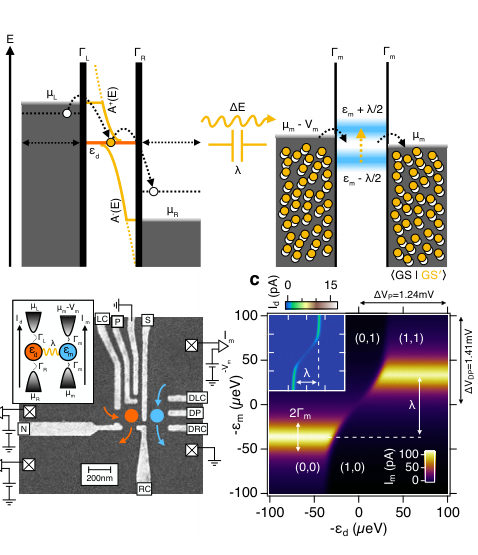
<figcaption class="paper-figure-caption"><b>Fig 1.</b> FIG. 1. Experimental overview. a, Mechanism by which Ander- son Orthogonality Catastrophe modifies tunnel rates. An electron tunnelling onto the dot (left) forces an abrupt restructuring of the de- tector Fermi sea (right) from one many-body ground state to another. The corresponding spectral functions, A±(E), describe energy ex- change with the detector during tunnel-in and tunnel-out processes, modifying the bare tunnel rates ΓL,R. b, Scanning electron micro- graph of the device and measurement circuit. The device schematic (inset) illustrates a dot (orange) weakly coupled to leads, and ca- pacitively coupled to the detector (blue) strongly coupled to its own leads. c, Charge stability...</figcaption>
</figure>
<figure class="paper-figure-card">
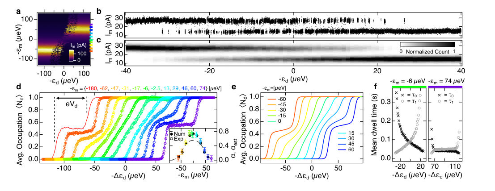
<figcaption class="paper-figure-caption"><b>Fig 2.</b> FIG. 2. Time-resolved measurements of AOC-modified tunnelling. a, Detector current map measured with a voltage bias Vd = 50 µV across the dot, for λ = 104 µeV and Γm = 22 µeV. Individual tunnelling events are resolved when εd lies within the bias window. b, Detector current during a slow sweep of εd across the charge transition (−εm = −6 µeV), revealing individual hopping events. c, Histograms of detector current at each εd, showing the bimodal distribution of Nd = 0 and Nd = 1 charge states (−εm = −6 µeV). d, Average occupation ⟨Nd⟩(εd) for several detector detunings εm, indicated by colour in panel a. Markers are extracted from the histograms; solid lines are obtained from normalized...</figcaption>
</figure>
<figure class="paper-figure-card">
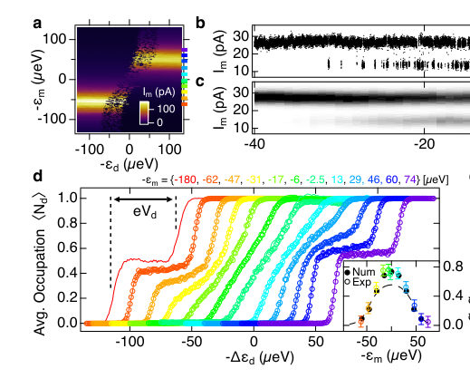
<figcaption class="paper-figure-caption"><b>Fig 3.</b> Figure 2 shows a direct measurement of AOC-modified tunnelling rates and their effect on the average occupation, ⟨Nd⟩(εd). A large bias is applied across the dot to expose a wide energy window over which tunnelling processes can be monitored, while Γd is made small enough that individual tunnelling events are resolved within the ≈1 kHz bandwidth of the charge-sensing circuit. The result is the detector cur- rent map in Fig. 2a, which should be compared to the near- equilibrium stability diagram in Fig. 1c where the dot bias is small and Γd is much larger. Tunnel-in and tunnel-out events are visible as εd is swept across the bias window, both in the 2D map (Fig. 2a) and in the slow line...</figcaption>
</figure>
<figure class="paper-figure-card">
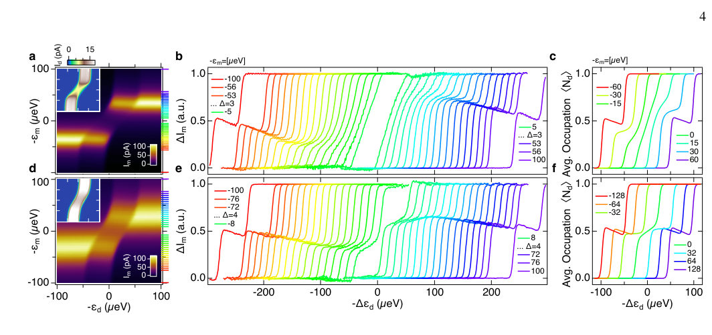
<figcaption class="paper-figure-caption"><b>Fig 4.</b> FIG. 3. Average-current proxy for AOC-modified occupation. a, Simultaneous detector- and dot-current measurements, showing Im and Id (inset) for λ = 70 µeV, Γm = 15 µeV, and Vd = 50 µV. The dot coupling Γd is tuned large enough that individual tunnelling events are no longer resolved. b, Detector current Im normalized to the values corresponding to Nd = 0 and Nd = 1, as a proxy for ⟨Nd⟩. Traces are shown for several detector detunings, εm, indicated by colour in panel a. c, Calculated ⟨Nd⟩(εd) for the same parameters, including AOC and an FES. d-f, Equivalent measurement and calculation for parameters corresponding to weaker AOC, λ = 60 µeV, Γm = 32 µeV.</figcaption>
</figure>
<figure class="paper-figure-card">
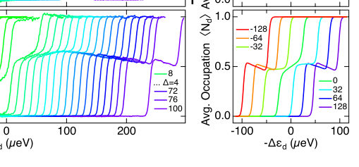
<figcaption class="paper-figure-caption"><b>Fig 5.</b> Figure 3 shows the result of such a measurement. Discrete dot tunnel events are no longer visible in the raw Im maps (Figs. 3a,d), but each line trace Im(εd) corresponding to a fixed value of εm can be rescaled with respect to the values at large negative and positive εd. The resulting normalized signal provides a proxy for ⟨Nd⟩(εd). Panels a-c represent a setting of λ/Γm similar to that in Fig. 2, and the primary features of Fig. 2d are indeed reproduced: far from detector resonance the normalized current has a broad plateau, while near εm = 0 the plateau is replaced by an approximately- diagonal trace across the bias window.</figcaption>
</figure>
</div>

<p><strong>Summary.</strong> The authors investigate how measurement itself can fundamentally alter quantum transport by inducing Anderson Orthogonality Catastrophe (AOC) backaction in coupled quantum dots. By measuring the detector's response as a function of coupling strength, they demonstrate that this many-body correlation acts as a tunable knob to modify tunneling rates. This work establishes a controllable mechanism for engineering non-trivial dynamics in solid-state quantum devices.</p>
<p><strong>Why it may be interesting.</strong> This work provides a clean, solid-state platform to observe fundamental many-body physics (AOC) in an open quantum system setting. The ability to tune this correlation via gate voltages makes it highly relevant for controlling quantum dynamics in nanoscale devices.</p>
<details>
<summary>Detailed structure</summary>
<p><strong>Main problem.</strong> The study aims to quantify detector-induced many-body correlations, specifically the Anderson Orthogonality Catastrophe (AOC), as a controllable source of backaction on quantum tunneling dynamics.</p>
<p><strong>Main result.</strong> The experiment successfully demonstrates that tuning the energy level of a coupled quantum dot detector can modulate the tunneling rates from ordinary resonant transport to regimes dominated by AOC-induced many-body correlations.</p>
<p><strong>Method.</strong> The research combines mesoscopic electrical measurements (measuring current and occupation in charge stability diagrams) with theoretical analysis using derived exponents ($\alpha_{est}$) relating transport signatures to the AOC parameter.</p>
<p><strong>Model / system.</strong> The system is a coupled quantum dot circuit where one dot acts as the measured system, weakly coupled to another dot detector. The detector is strongly coupled to reservoirs and is held near equilibrium, allowing measurement of its many-body response.</p>
<p><strong>Key observables.</strong> Average occupation ($\langle N_d 
angle$), detector current ($I_m$), dot current ($I_d$), and the derived AOC exponent ($\alpha$).</p>
<p><strong>Important parameters / regimes.</strong> Detector energy level detuning ($\epsilon_m$), bias voltage ($V_d$), temperature ($T$), and the ratio of coupling strengths ($\lambda/\Gamma_m$).</p>
<p><strong>Assumptions / limitations.</strong> The validity of mapping average current to occupation is assumed, and theoretical derivations rely on approximations valid in specific low-bias or weak-coupling limits.</p>
<p><strong>Figures summary.</strong> Figures illustrate charge stability diagrams showing simultaneous measurements ($I_d$ vs $I_m$), time-resolved data confirming AOC effects on tunneling rates, and plots demonstrating the extraction of $\alpha_{est}$ from various transport signatures.</p>
<p><strong>Paper structure.</strong> The paper progresses by first establishing the physical setup and mechanism (AOC backaction), presenting multiple measurement techniques ($\langle N_d 
angle$ vs. $I_m$), deriving quantitative estimates for the AOC exponent ($\alpha_{est}$) from these measurements, and finally testing the robustness of $\alpha_{est}$ against experimental variations like temperature and bias.</p>
</details>
<details>
<summary>Abstract</summary>
<p>Measurement perturbs a quantum system by coupling it to external degrees of freedom, but detector backaction depends on the physical mechanism of measurement itself. In solid-state devices, detectors driven far from equilibrium to enable faster measurements produce backaction that can often be understood as classical noise. However, a strong measurement can also induce backaction from quantum many-body correlations in the detector that are intrinsic to the measurement, even without shot noise. Here, we probe this near-equilibrium backaction through the effect of a quantum-dot charge sensor on tunnelling between a second quantum dot and its reservoirs. The measurement realizes the Anderson Orthogonality Catastrophe (AOC): electrons in the detector leads reorganize in response to an abrupt change in local scattering potential, suppressing resonant tunnelling while enabling inelastic processes that exchange energy with the detector. Changing the detector energy level tunes the AOC backaction from negligible to dominant in the tunnelling dynamics. More broadly, these results establish detector-induced many-body correlations as a controllable influence on quantum dynamics.</p>
</details>
<p><sub><a href="#top">↑ back to top</a></sub></p>

<p><a id="paper-2608.06647"></a></p>
<h3 id="tunable-g-factors-of-hybridized-orbitals-in-a-quantum-dot-molecule"><a href="http://arxiv.org/abs/2608.06647v1">Tunable g-Factors of Hybridized Orbitals in a Quantum Dot Molecule</a></h3>
<p><strong>Authors:</strong> Michelle Lienhart, Krzysztof Gawarecki, Pavel Daskalov, Christopher Thalacker, Nadeem Akhlaq, Irina Ivanova, Johannes Schall, Sven Rodt, Stephan Reitzenstein, Arne Ludwig, Dirk Reuter, Kai Müller, Jonathan J. Finley<br>
<strong>Type:</strong> both · <strong>Category:</strong> quantum information and computing · <strong>PDF:</strong> <a href="https://arxiv.org/pdf/2608.06647v1">https://arxiv.org/pdf/2608.06647v1</a><br>
<strong>Analysis basis:</strong> full PDF text, analyzed in chunks
<strong>Topic relevance:</strong> 🔥 <code>QC/QI experiment</code> <strong>4/5</strong> · <code>spintronics-quantum-optics interface</code> <strong>3/5</strong> · <code>analog quantum simulation</code> <strong>2/5</strong> · <code>Keldysh / 2PI / non-Gaussian methods</code> <strong>1/5</strong> · <code>driven-dissipative phase transition</code> <strong>1/5</strong> · <code>entanglement &amp; information structure</code> <strong>1/5</strong> · <code>exotic spin models in light-matter</code> <strong>1/5</strong> · <code>quantum optics experiment</code> <strong>1/5</strong></p>
<div class="figure-strip-hint">↔ Scroll figures horizontally</div>
<div class="paper-figures-scroll">
<figure class="paper-figure-card">
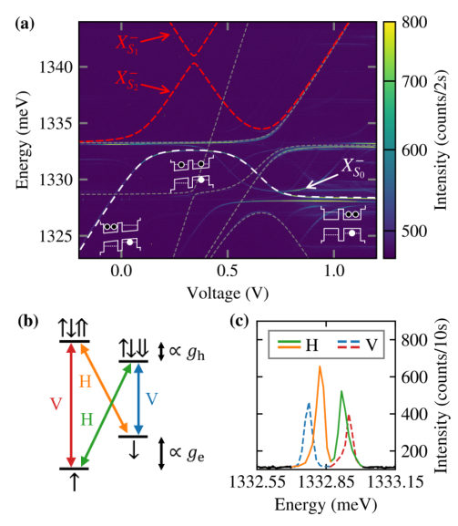
<figcaption class="paper-figure-caption"><b>Fig 1.</b> FIG. 1. (a) Voltage-dependent photoluminescence recorded from the single QDM investigated by exciting quasi- resonantly in the wetting layer. The trion states are fitted using a few-body Hamiltonian. The relevant singlet states are highlighted by the white curve (X− S0) and red curves (X− S1 and X− S2). The insets schematically depict the voltage de- pendent occupation of the orbital states in the trion singlet X− S0. (b) Schematic representation of the trion level structure when applying an in-plane magnetic field (Voigt geometry). (c) Polarization-resolved emission from the trion X− S0 state at B = 7 T and 0.44 V.</figcaption>
</figure>
<figure class="paper-figure-card">
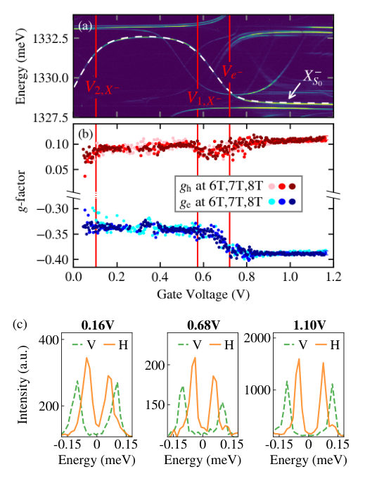
<figcaption class="paper-figure-caption"><b>Fig 2.</b> FIG. 2. (a) Voltage-dependent photoluminescence recorded from the trion singlet state X− S0 with the trion V1,X−, V2,X− and electron Ve−avoided crossings shown by vertical red lines. (b) Voltage dependent electron ge (blue) and hole gh (red) g- factors showing no B-field dependence. The electron g-factor ge changes around the electron avoided crossing Ve−. (c) Polarization-resolved emission from the trion X− S0 state at 8 T for the voltages 0.16 V, 0.68 V, and 1.1 V. The zero of the en- ergy axis is set approximately at the midpoint of the splitting. The corresponding PLV can be found in the Appendix 2 a in Fig. 8.</figcaption>
</figure>
<figure class="paper-figure-card">
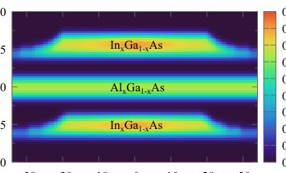
<figcaption class="paper-figure-caption"><b>Fig 3.</b> FIG. 3. The In content distribution (InxGa1−xAs) in the QDs and Al content (AlxGa1−xAs) in the interdot barrier.</figcaption>
</figure>
<figure class="paper-figure-card">
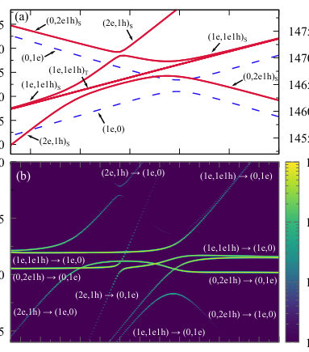
<figcaption class="paper-figure-caption"><b>Fig 4.</b> FIG. 4. (a) Calculated negative trion X−energies (red solid lines, scale on the left) and single-electron energy branches (blue dashed lines, scale on the right), and (b) the simulated PLV spectrum.</figcaption>
</figure>
<figure class="paper-figure-card">
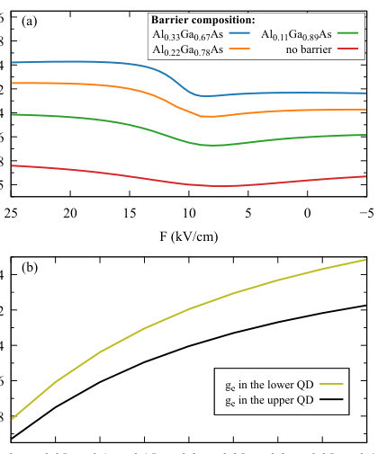
<figcaption class="paper-figure-caption"><b>Fig 5.</b> FIG. 5. (a) The electron g-factor as a function of the electric field, calculated for various compositions of the AlGaAs bar- rier. (b) The g-factor at F = −5 kV/cm and F = 25 kV/cm associated with the values in the upper and the lower QD, respectively.</figcaption>
</figure>
</div>

<p><strong>Summary.</strong> This work demonstrates the ability to electrically tune the electron and hole g-factors within a quantum dot molecule using magneto-photoluminescence spectroscopy. By observing distinct changes in $g_e$ at tunneling resonances, the authors confirm that electric fields provide precise control over spin properties. This capability opens new pathways for deterministically generating complex entangled photonic states.</p>
<p><strong>Why it may be interesting.</strong> The direct electrical tuning of fundamental parameters like the g-factor in solid-state quantum systems provides a powerful platform for engineering qubit interactions and deterministic entanglement generation protocols relevant to quantum computing architectures.</p>
<details>
<summary>Detailed structure</summary>
<p><strong>Main problem.</strong> Controlling the g-factors of orbital spin states in quantum dot molecules (QDMs) is essential for achieving high-fidelity generation of multi-photonic cluster states with higher-dimensional entanglement.</p>
<p><strong>Main result.</strong> The electron g-factor shows a pronounced step-like change at the tunneling resonance, while the hole g-factor remains nearly constant, demonstrating electric-field control over trion g-factors.</p>
<p><strong>Method.</strong> Polarization-resolved magneto-photoluminescence spectroscopy was used experimentally, and the results were quantitatively reproduced using an eight-band k.p model theoretically.</p>
<p><strong>Model / system.</strong> The study investigates negatively charged trions (X-) in a single InGaAs QDM, which is composed of two vertically stacked quantum dots separated by about 10 nm, allowing for gate voltage tuning.</p>
<p><strong>Key observables.</strong> Electron ($g_e$) and hole ($g_h$) g-factors measured as a function of gate voltage; photoluminescence spectra under magnetic fields.</p>
<p><strong>Important parameters / regimes.</strong> Gate voltage (electric field), applied magnetic field strength, tunneling resonance voltages, and the trion charge state ($ ext{X}^-$).</p>
<p><strong>Assumptions / limitations.</strong> The theoretical model relies on an eight-band k.p approach combined with Configuration Interaction for calculating trion states.</p>
<p><strong>Figures summary.</strong> Figure 1 illustrates voltage-dependent PL spectra showing multiple charge states, and a schematic depicts the trion level structure under an in-plane magnetic field (Voigt geometry).</p>
<p><strong>Paper structure.</strong> The paper establishes the necessity of g-factor control for quantum state generation. It presents experimental measurements on $   ext{X}^-$ in the QDM, detailing the voltage dependence of $g_e$ and $g_h$. Finally, it validates these findings using an eight-band k.p model to confirm electric-field tunability.</p>
</details>
<details>
<summary>Abstract</summary>
<p>The ability to control the $g$-factors of orbital spin states in optically active quantum dot molecules (QDMs) is a prerequisite for the high-fidelity generation of multi-photonic cluster states with higher-dimensional entanglement structure. Protocols that rely on two coupled spins require knowledge of the $g$-factor and its dependence on external control parameters. Mismatches in the $g$-factor between tunnel-coupled dots introduce unwanted dephasing of coupled spin-states, making precise characterization and voltage control essential. Here, we measure the gate voltage dependence of the electron and hole $g$-factors of negatively charged trions $X^{-}$ in a single InGaAs QDM using polarization-resolved magneto-photoluminescence spectroscopy. The electron $g$-factor exhibits a pronounced step-like change at the tunneling resonance, shifting from $g_\mathrm{e} = -0.336\pm 0.008$ to $g_\mathrm{e} = -0.389\pm 0.003$, providing a direct spectroscopic fingerprint of molecular orbital formation and a shift of the wavefunction localization from the lower to the upper dot. In contrast, the hole $g$-factor remains nearly constant at $g_\mathrm{h} \approx 0.094 \pm 0.007$, exhibiting a weak modulation near the anticrossing voltages attributed to Coulomb-mediated deformation of the wavefunction by the tunneling electron. Our results are quantitatively reproduced by an eight-band $\mathbf{k}{\cdot}\mathbf{p}$ model, establishing electric-field control of the trion $g$-factors as a practical tool for independently tuning the Zeeman splitting of individual dots and opening new pathways towards the deterministic generation of two-dimensional photonic cluster states.</p>
</details>
<p><sub><a href="#top">↑ back to top</a></sub></p>

<p><a id="paper-2608.07324"></a></p>
<h3 id="onset-of-the-transitional-flux-avalanche-regime-in-bulk-nbti-controlled-by-the-thermal-boundary-conductance"><a href="http://arxiv.org/abs/2608.07324v1">Onset of the transitional flux-avalanche regime in bulk NbTi controlled by the thermal boundary conductance</a></h3>
<p><strong>Authors:</strong> Irina Abaloszewa, Victor V. Chabanenko, Aleksander Abaloszew<br>
<strong>Type:</strong> experiment · <strong>Category:</strong> other · <strong>PDF:</strong> <a href="https://arxiv.org/pdf/2608.07324v1">https://arxiv.org/pdf/2608.07324v1</a><br>
<strong>Analysis basis:</strong> full PDF text, analyzed in chunks
<strong>Topic relevance:</strong> <code>correlated / nonlocal dissipation</code> <strong>3/5</strong> · <code>driven-dissipative phase transition</code> <strong>3/5</strong> · <code>analog quantum simulation</code> <strong>2/5</strong> · <code>non-equilibrium dynamics</code> <strong>2/5</strong> · <code>non-equilibrium universality</code> <strong>2/5</strong> · <code>Keldysh / 2PI / non-Gaussian methods</code> <strong>1/5</strong> · <code>Kondo &amp; dissipative impurity</code> <strong>1/5</strong> · <code>entanglement &amp; information structure</code> <strong>1/5</strong> · <code>measurement-induced transitions</code> <strong>1/5</strong> · <code>methods for driven-dissipative</code> <strong>1/5</strong></p>
<div class="figure-strip-hint">↔ Scroll figures horizontally</div>
<div class="paper-figures-scroll">
<figure class="paper-figure-card">

<figcaption class="paper-figure-caption"><b>Fig 1.</b> FIG. 1. Temperature dependence of the threshold field µ0Hth for avalanche nucleation in a bulk NbTi disk with pure non- adecane and three silver-filled nonadecane interfaces: 0% (pure nonadecane), 10, 25, and 50 wt.% Ag; the 50 wt.% data combine two runs at different positions on the disk, with different indicator films, and are plotted with the same sym- bol. The shaded band marks the interval of positive slope, dHth/dT &gt; 0, that appears with the silver-filled interface.</figcaption>
</figure>
<figure class="paper-figure-card">
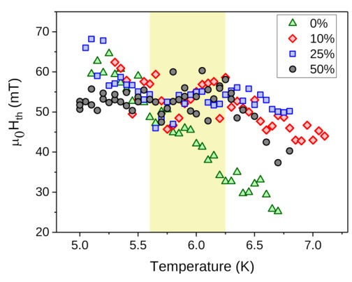
<figcaption class="paper-figure-caption"><b>Fig 2.</b> Figure 1 presents Hth(T) for the pure nonadecane in- terface and for three silver-filled compositions. The cen- tral result of this work is that the silver-filled interface changes Hth(T) qualitatively: the monotonic decrease seen with the pure interface is interrupted, in every silver- filled composition, by an interval in which the threshold rises or stays flat. For pure nonadecane, Hth decreases monotonically from about 60 mT at 5.1 K to about 25 mT at 6.7 K. The dependence is close to linear with a slope of approx- imately −24 mT/K, and dHth/dT &lt; 0 within the scatter of the data, confirming the thermally limited regime es- tablished in Ref. [15]. The silver-filled interface changes the...</figcaption>
</figure>
<figure class="paper-figure-card">
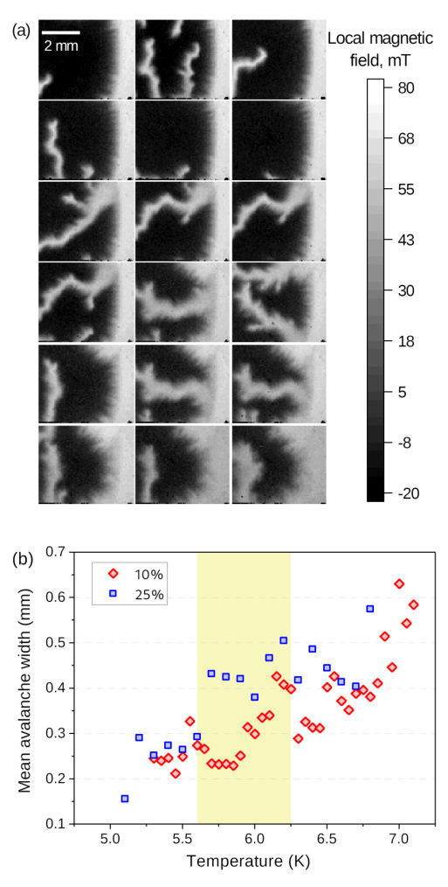
<figcaption class="paper-figure-caption"><b>Fig 3.</b> FIG. 2. (a) Magneto-optical images of the avalanche morphol- ogy in the 25 wt.% Ag series, recorded from 5.1 to 6.8 K in 0.1 K steps (left to right, top to bottom); the right edge of each frame is the disk rim, the scale bar is 2 mm, and the grey scale gives the local magnetic field of the background-subtracted images. The morphology evolves from narrow channeled fin- gers at low temperature to broad fronts at high temperature. (b) Mean width of the penetrating structures versus temper- ature for the 10 and 25 wt.% compositions; the shaded band marks the positive-slope window of Fig. 1.</figcaption>
</figure>
<figure class="paper-figure-card">
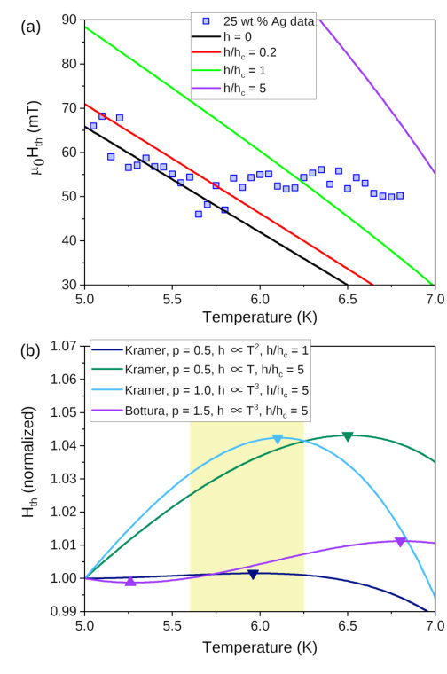
<figcaption class="paper-figure-caption"><b>Fig 4.</b> FIG. 3. Shapes admitted by the quasi-static interpolation, Eq. (3), in the measured window. (a) With the adiabatic threshold matched to the measured pure-nonadecane slope and ρff ∝1/Bc2(T), the interpolation yields monotonically decreasing curves at all couplings up to h/hc = 5, the values shown bracketing the coupling estimated for the composites, h/hc ≈0.1; the 25 wt.% Ag data are shown for comparison. (b) The only parameterizations in the scan that produce an interior maximum (down triangles), all requiring h/hc ≥1, a strongly temperature-dependent h, and a weakly decreasing Had; the maxima scatter across the interval and only acciden- tally fall inside the positive-slope window of Fig....</figcaption>
</figure>
</div>

<p><strong>Summary.</strong> This work experimentally investigates how modifying the thermal interface conductance in bulk NbTi superconductors alters the temperature dependence of flux avalanches. By introducing silver into the sample interface, the researchers induced a unique non-monotonic behavior in the threshold field $H_{th}(T)$. This signature is identified as direct evidence for entering a transitional regime where dynamic heat removal plays a crucial role.</p>
<p><strong>Why it may be interesting.</strong> While focused on superconductivity, the core concept of identifying a critical parameter ($h_c$) that dictates a qualitative phase/regime crossover based on thermal coupling is highly relevant to open quantum systems where environmental coupling drives non-equilibrium dynamics.</p>
<details>
<summary>Detailed structure</summary>
<p><strong>Main problem.</strong> The study investigates the onset of a transitional flux-avalanche regime in bulk Type-II superconductors, determining how thermal boundary conductance controls the superconducting instability.</p>
<p><strong>Main result.</strong> Incorporating silver into the thermal interface layer causes the threshold field $H_{th}(T)$ to exhibit non-monotonic behavior, including an interval where $  ext{dH}_{th}/   ext{dT} &gt; 0$, which signals entry into this transitional regime.</p>
<p><strong>Method.</strong> Measurements were performed using magneto-optical imaging (MOI) on bulk NbTi disks with interfaces modified by varying concentrations of silver powder.</p>
<p><strong>Model / system.</strong> The physical system is a bulk Type-II superconductor (NbTi) undergoing thermomagnetic avalanches. The key control parameter is the thermal boundary conductance ($h$) at the sample interface, which dictates the transition between electromagnetically and thermally controlled regimes.</p>
<p><strong>Key observables.</strong> $H_{th}(T)$ (threshold field vs. temperature), $   ext{dH}_{th}/   ext{dT}$ (slope of $H_{th}$), and avalanche morphology (fingers vs. fronts).</p>
<p><strong>Important parameters / regimes.</strong> Critical thermal boundary conductance ($h_c$), silver loading concentration ($    ext{wt.}\%$ Ag), and the characteristic temperature $T^* \approx 6.1-6.4$ K.</p>
<p><strong>Assumptions / limitations.</strong> The analysis assumes that the observed non-monotonicity is a direct experimental signature of dynamic heat removal becoming relevant during the instability process, distinguishing it from purely quasi-static predictions.</p>
<p><strong>Figures summary.</strong> Figure 1 shows $H_{th}(T)$ for various Ag concentrations, highlighting the positive slope region ($    ext{dH}_{th}/   ext{dT} &gt; 0$) in silver-filled interfaces. Figure 2 relates this to avalanche morphology changes (fingers to fronts).</p>
<p><strong>Paper structure.</strong> The paper establishes the background of flux avalanche regimes, details the experimental modification using Ag-filled interfaces, presents the key results showing non-monotonic $H_{th}(T)$ behavior, and correlates this change with both the transition into the transitional regime and changes in avalanche morphology.</p>
</details>
<details>
<summary>Abstract</summary>
<p>Thermomagnetic avalanches in type-II superconductors occur in two qualitatively different regimes, electromagnetically controlled in thin films and thermally limited in bulk samples, distinguished by the sign of the temperature derivative of the threshold field $H_\text{th}(T)$. The two regimes are separated by a critical thermal boundary conductance $h_c$, and a non-monotonic $H_\text{th}(T)$ has been predicted in the transitional region where the interface conductance $h$ approaches $h_c$. We approach this region in a bulk NbTi disk by raising the interface coupling above the pure-nonadecane baseline with a silver-filled interface layer. Whereas the pure interface gives a monotonically decreasing $H_\text{th}(T)$, the silver-filled interface produces a non-monotonic dependence not previously realized in a bulk superconductor: a temperature interval of positive slope, $dH_\text{th}/dT > 0$, terminating in a maximum at $T^* \approx 6.1$--$6.4$~K. The effect is reproduced for two independent silver-filled compositions; in a third, with the highest loading, the low-temperature decrease is absent altogether and $H_\text{th}(T)$ is flat up to the same $T^*$, the evolution expected for stronger coupling. The position of the maximum is set by the intrinsic properties of NbTi, independent of the silver content. The onset of the positive-slope interval coincides in temperature with a change of the avalanche morphology from narrow channeled fingers to broad fronts. The reversal of the sign of $dH_\text{th}/dT$ is a direct experimental signature of the onset of the transitional regime, in which heat removal during the instability becomes dynamically relevant.</p>
</details>
<p><sub><a href="#top">↑ back to top</a></sub></p>

<p><a id="paper-2608.07101"></a></p>
<h3 id="origin-of-the-superconductor-insulator-transition-in-disordered-two-dimensional-films"><a href="http://arxiv.org/abs/2608.07101v1">Origin of the superconductor-insulator transition in disordered two-dimensional films</a></h3>
<p><strong>Authors:</strong> Alexander Weitzel, Lea Pfaffinger, Animesh Panda, Arpan Das, Ilaria Maccari, Simon Reinhardt, Sven Linzen, Evgenii Il'ichev, Nicola Paradiso, Ferdinand Evers, Christoph Strunk<br>
<strong>Type:</strong> both · <strong>Category:</strong> disordered systems and neural networks · <strong>PDF:</strong> <a href="https://arxiv.org/pdf/2608.07101v1">https://arxiv.org/pdf/2608.07101v1</a><br>
<strong>Analysis basis:</strong> full PDF text, analyzed in chunks
<strong>Topic relevance:</strong> <code>driven-dissipative phase transition</code> <strong>3/5</strong> · <code>non-equilibrium universality</code> <strong>2/5</strong> · <code>Keldysh / 2PI / non-Gaussian methods</code> <strong>1/5</strong> · <code>Kondo &amp; dissipative impurity</code> <strong>1/5</strong> · <code>analog quantum simulation</code> <strong>1/5</strong> · <code>correlated / nonlocal dissipation</code> <strong>1/5</strong> · <code>methods for driven-dissipative</code> <strong>1/5</strong> · <code>non-equilibrium dynamics</code> <strong>1/5</strong></p>
<div class="figure-strip-hint">↔ Scroll figures horizontally</div>
<div class="paper-figures-scroll">
<figure class="paper-figure-card">
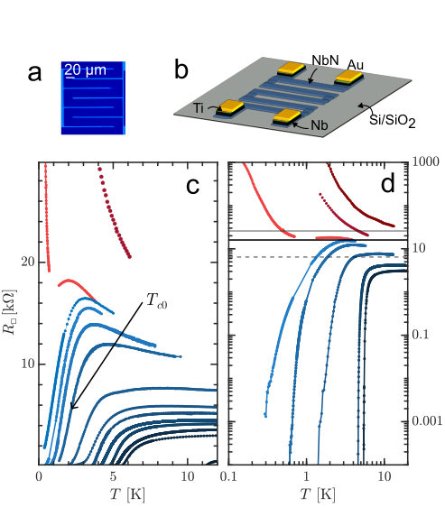
<figcaption class="paper-figure-caption"><b>Fig 1.</b> FIG. 1. Setup and DC resistance: a) Optical micrograph of a typical device: argon ion milling is used to etch the 3 nm thick NbN film into a meander shape. b) Schematic of the 4-terminal contact design. c) Sheet resistance vs. tempera- ture of 13 NbN-film with room-temperature resistance up to 3.5 kΩ. The normal state resistance RN including all quan- tum corrections is assigned to the maximum of R□(T). d) Selected R□(T)-curves on a logarithmic scale.</figcaption>
</figure>
<figure class="paper-figure-card">
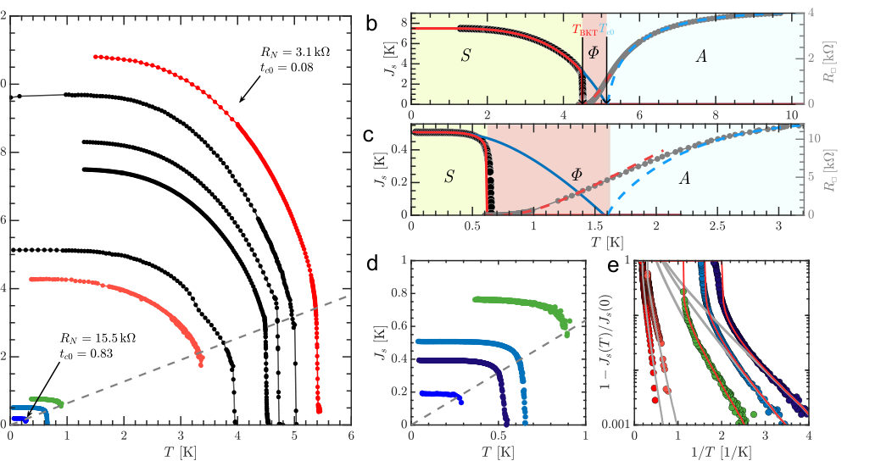
<figcaption class="paper-figure-caption"><b>Fig 2.</b> FIG. 2. Superfluid phase stiffness: a) Measured Js(T) for selected films. The dashed line indicates the universal transition point at Js(TBKT) = 2TBKT/π. b) Stiffness and resistance for RN = 4.1 kΩ. Solid lines are fits to Js(T) according to the BCS (blue) and BKT (red) theories. Dashed lines are fits describing phase (red, Eq. 1) and amplitude fluctuations. Colored shades denote areas that are fully superconducting (S) or dominated by phase (Φ) and amplitude (A) fluctuations, respectively. c) Same for RN = 12.3 kΩ, close to the SIT. d) Zoom of low-temperature range in a). Colored curves correspond to those in a. e) Exemplary Arrhenius plots of the difference 1 −Js(T)/Js(0) for RN = 3.1,...</figcaption>
</figure>
<figure class="paper-figure-card">
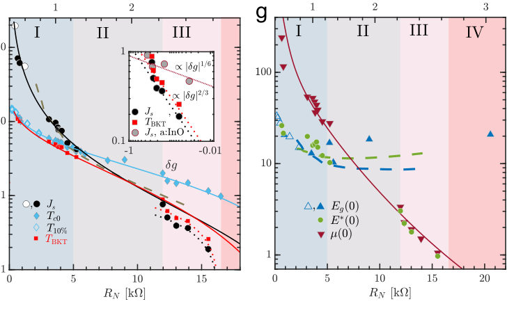
<figcaption class="paper-figure-caption"><b>Fig 3.</b> FIG. 3. Evolution of energy scales with disorder: a-d) Simulated maps of the pairing potential ∆(0) based on a fully self- consistent mean-field calculation on a lattice with 96x96 sites corresponding to regimes I-IV in (e), respectively (Supplement, Sec. II). The color bar corresponds to ∆/t= [0.1375 0.1825], [0.025 0.25], [0.01 0.3], [0 0.375] for a,b,c,d, respectively. e) Overview over all energy scales in the problem (see text). Long dashed lines are guides to the eyes. f) Comparison of experiment and theory for Tc0 and Finkel’stein (Eq. S.11, light blue line), for Js(0) based on Mattis-Bardeen (Eq. 3, black line), and for TBKT based (Eq. 5, red line). Inset: Double-logarithmic plot for...</figcaption>
</figure>
<figure class="paper-figure-card">
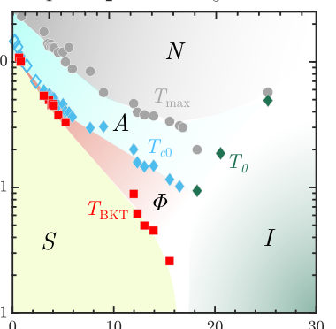
<figcaption class="paper-figure-caption"><b>Fig 4.</b> FIG. 4. Phase diagram Regions in the (T −RN)-plane sep- arated by the BKT phase transition line TBKT(RN), the line Tc0(RN), which denotes the crossover between the phase and amplitude fluctuations regimes, and Tmax(RN) signaling the crossover to weakly localized metal. The green symbols indi- cate the activation temperatures in the insulating phase.</figcaption>
</figure>
</div>

<p><strong>Summary.</strong> This paper investigates the superconductor-insulator transition in 2D films by analyzing how disorder affects superconducting properties. The authors show that while the finite-temperature transition follows BKT physics, the zero-temperature transition is governed by quantum phase fluctuations causing $J_s(0)$ to vanish rapidly. By comparing transport measurements with theory, they clarify the role of these fluctuations in driving the system into an insulating state.</p>
<p><strong>Why it may be interesting.</strong> The work provides a detailed experimental realization of a quantum critical point driven by fluctuations in an ordered state (superconductivity), which is highly relevant for understanding emergent quantum phases in disordered materials, linking concepts from localization theory and superconductivity.</p>
<details>
<summary>Detailed structure</summary>
<p><strong>Main problem.</strong> The study investigates the origin of the superconductor-insulator transition (SIT) in disordered two-dimensional superconducting films, specifically determining whether it is driven by bosonic or fermionic quantum fluctuations.</p>
<p><strong>Main result.</strong> The finite-temperature transition remains BKT type near the SIT, but the zero-temperature superfluid stiffness ($J_s(0)$) vanishes rapidly while $T_{c0}$ stays finite, indicating that quantum phase fluctuations drive the zero-temperature transition.</p>
<p><strong>Method.</strong> The authors combine experimental measurements of DC resistance ($R_\Box(T)$) and superfluid stiffness ($J_s(T)$) with theoretical fitting techniques (e.g., BKT analysis, Finkel'stein theory) to map out energy scales across varying disorder strengths.</p>
<p><strong>Model / system.</strong> The system under study is disordered two-dimensional superconducting films (e.g., NbN), characterized by a complex order parameter $\Delta(\mathbf{r})$. The physics involves the competition between Anderson localization and superconductivity, analyzed through various theoretical regimes (BCS-like suppression to insulating phase).</p>
<p><strong>Key observables.</strong> Sheet resistance $R_\Box(T)$, superfluid stiffness $J_s(T)$, mean-field transition temperature ($T_{c0}$), BKT transition temperature ($T_{BKT}$), and zero-temperature superfluid stiffness ($J_s(0)$).</p>
<p><strong>Important parameters / regimes.</strong> Disorder strength ($W$), critical resistance ($R_c$), characteristic energy scales like activation energy ($E^*$) and quasiparticle excitation energy ($E_g$).</p>
<p><strong>Assumptions / limitations.</strong> The analysis relies on established theories like the BKT mechanism for finite-temperature transitions, while addressing discrepancies between mean-field predictions and experimental observations due to quantum fluctuations.</p>
<p><strong>Figures summary.</strong> Figures illustrate $R_\Box(T)$ vs. T measurements, $J_s(T)$ evolution across different disorder levels, phase diagrams in the $(T-R_N)$-plane showing transition regions, and plots comparing theoretical energy scales ($E^*$, $\mu$, $E_g$) versus disorder strength.</p>
<p><strong>Paper structure.</strong> The paper systematically analyzes transport measurements to extract key parameters like $T_{c0}$ (via inflection points) and $T_{BKT}$ (via fitting), compares these results across multiple disorder regimes, and uses the separation of energy scales ($J_s(0)$ vs. $T_{c0}$) to pinpoint the nature of the quantum phase transition.</p>
</details>
<details>
<summary>Abstract</summary>
<p>Theory predicts the superconductor-to-insulator transition (SIT) to emerge from the competition between Anderson localization, which tends to localize single-particle wavefunctions, and superconductivity, which establishes long-range correlations in the superconducting order parameter. In two-dimensional (2D) superconducting films, the transition temperature $T_\text{c}$ at which resistance vanishes, $R_\Box(T_\text{BKT}){=}0$, is set by the Berezinskii-Kosterlitz-Thouless (BKT) mechanism and satisfies $T_\text{BKT}< T_{c0}$, where $T_{c0}$ is the mean-field transition temperature. In weakly disordered samples $T_\text{BKT}\lesssim T_{c0}$, whereas increasing disorder drives $T_\text{BKT}\ll T_{c0}$ near the SIT. Whether the finite-temperature transition retains its BKT character throughout this crossover remains an open question. Here, we investigate the evolution of both sheet resistance $R_\Box(T)$ and superfluid stiffness $J_s(T)$ over a wide range of disorder strength $W$. We establish that even near the SIT, the finite-temperature transition from the superconducting to the resistive state remains of BKT type. However, as disorder approaches the critical value, the zero temperature superfluid phase stiffness, $J_s(0)$, is found to vanish rapidly while $T_{c0}$ remains finite, which we attribute to quantum phase fluctuations as the drive for the zero-temperature transition. Three decades after its experimental discovery by Haviland, Liu, and Goldman, our measurements clarify the origin of the SIT in 2D films.</p>
</details>
<p><sub><a href="#top">↑ back to top</a></sub></p>

<p><a id="paper-2608.06476"></a></p>
<h3 id="theory-of-spin-wave-transport-in-ferromagnet-superconductor-heterostructures-negative-refraction-perfect-imaging-and-temperature-controlled-spin-wave-optics"><a href="http://arxiv.org/abs/2608.06476v1">Theory of spin-wave transport in ferromagnet-superconductor heterostructures: Negative refraction, perfect imaging and temperature-controlled spin-wave optics</a></h3>
<p><strong>Authors:</strong> Tomas T. Osterholt, Thijs van der Meer, Pim H. Vree, Merel A. Bouma, Michael Borst, Toeno van der Sar, Rembert A. Duine<br>
<strong>Type:</strong> theory · <strong>Category:</strong> other · <strong>PDF:</strong> <a href="https://arxiv.org/pdf/2608.06476v1">https://arxiv.org/pdf/2608.06476v1</a><br>
<strong>Analysis basis:</strong> full PDF text, analyzed in chunks
<strong>Topic relevance:</strong> <code>exotic spin models in light-matter</code> <strong>3/5</strong> · <code>spintronics-quantum-optics interface</code> <strong>3/5</strong> · <code>Keldysh / 2PI / non-Gaussian methods</code> <strong>1/5</strong> · <code>correlated / nonlocal dissipation</code> <strong>1/5</strong> · <code>driven-dissipative phase transition</code> <strong>1/5</strong> · <code>methods for driven-dissipative</code> <strong>1/5</strong></p>
<div class="figure-strip-hint">↔ Scroll figures horizontally</div>
<div class="paper-figures-scroll">
<figure class="paper-figure-card">
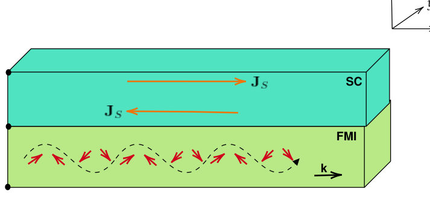
<figcaption class="paper-figure-caption"><b>Fig 1.</b> FIG. 1. FMI-SC heterostructure. A spin wave with wavevector k is traveling through the ferromagnetic insulator (FMI), resulting in Meissner screening from the superconductor (SC) via the generation of a supercurrent density JS.</figcaption>
</figure>
<figure class="paper-figure-card">
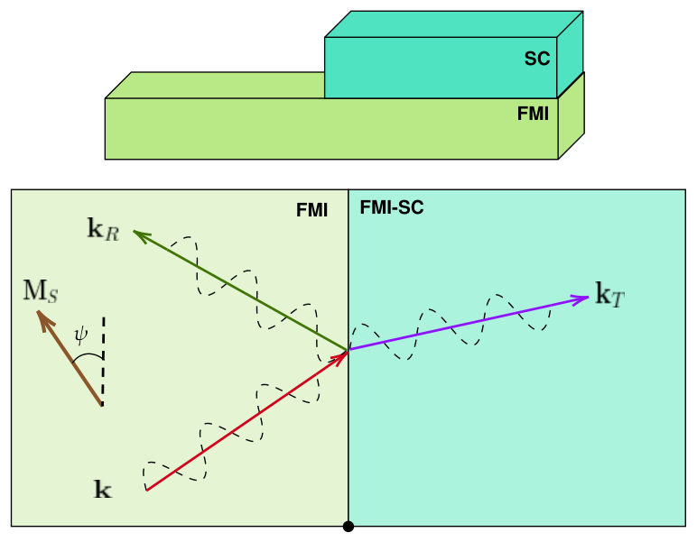
<figcaption class="paper-figure-caption"><b>Fig 2.</b> FIG. 2. Spin-wave reflection and refraction. A spin wave with wavevector k is reflected and refracted at the interface between a bare FMI and an FMI-SC heterostructure located at x = 0. Here, the wavevectors of the reflected and refracted spin waves are denoted by kR and kT , respectively. The saturation magnetization MS is oriented with an angle ψ relative to the y-axis and is the same in both the bare FMI and the FMI-SC heterostructure</figcaption>
</figure>
<figure class="paper-figure-card">
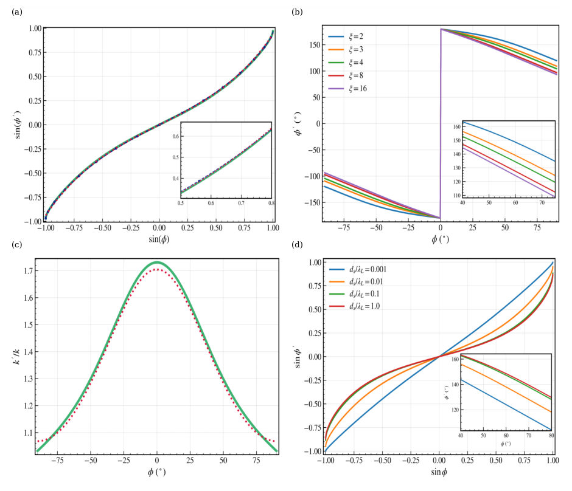
<figcaption class="paper-figure-caption"><b>Fig 3.</b> FIG. 3. Reflection law in the FMI-SC heterostructure. (a) Sine of the angle ϕ′ of the reflected wavevector as a function of the sine of the angle ϕ of the incident wavevector. The green, solid line shows the result obtained from the exact dispersion relation, Eq. (44), while the dark blue, dashed line is obtained using the polynomial approximation, Eq. (63). The red, dotted line represents the approximate reflection law given in Eq. (67). (b) Reflected angle ϕ′ as a function of the incident angle ϕ for different values of the ellipticity ξ. (c) Ratio between the magnitudes of the reflected (k′) and incident (k) wavevectors as a function of the incident angle ϕ. The green, solid line shows...</figcaption>
</figure>
<figure class="paper-figure-card">
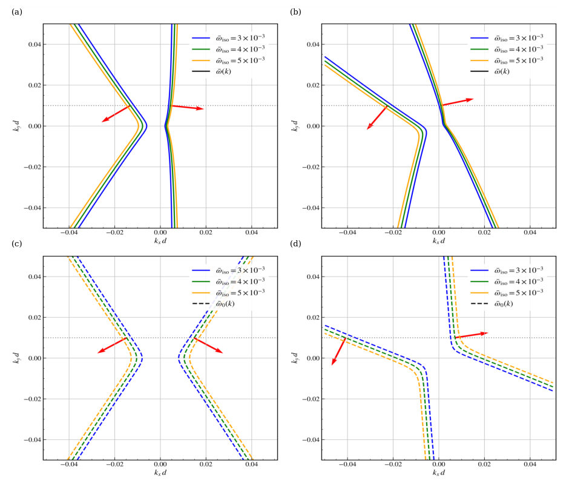
<figcaption class="paper-figure-caption"><b>Fig 4.</b> FIG. 4. Negative reflection. Plots of the isofrequency contours of the dispersion relations ω(k) and ω0(k) in the London dipolar limit, given by Eqs. (55) and (57), respectively, for different values of the saturation magnetization angle ψ. The plots illustrate the emergence of negative reflection as ψ is varied. For convenience, we have introduced the dimensionless frequencies ¯ω(k) = [ω(k) −γB0ξ]/(γµ0MS) and ¯ω0(k) = [ω0(k) −γB0ξ]/(γµ0MS), and in all panels we have set the ellipticity ξ = 2. The red arrows indicate the direction of the spin-wave group velocity at the points where the isofrequency contours intersect the gray dotted line kyd = 0.01. Due to the translational invariance of...</figcaption>
</figure>
<figure class="paper-figure-card">
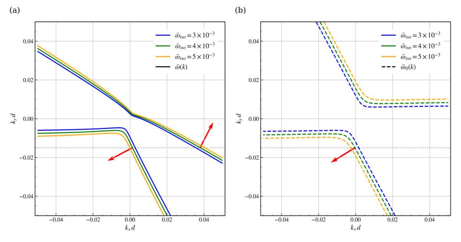
<figcaption class="paper-figure-caption"><b>Fig 5.</b> FIG. 5. Temperature-controlled opening and closing of reflection channels. Isofrequency contours of the dispersion relations ω(k) and ω0(k) in the London dipolar limit, given by Eqs. (55) and (57), respectively, for ellipticity ξ = 2 and saturation magnetization angle ψ = 60◦. Here, ω(k) corresponds to the dispersion of the FMI-SC heterostructure in the superconducting state (T &lt; Tc), while ω0(k) corresponds to the dispersion of the same heterostructure in the normal state (T &gt; Tc), where the Meissner screening is absent. For convenience, we have introduced the dimensionless frequencies ¯ω(k) = [ω(k)−γB0ξ]/(γµ0MS) and ¯ω0(k) = [ω0(k) −γB0ξ]/(γµ0MS). The red arrows indicate the direction of...</figcaption>
</figure>
</div>

<p><strong>Summary.</strong> This theoretical work investigates spin-wave transport in ferromagnet/superconductor heterostructures, establishing a framework based on self-consistent field calculations. The key finding is that superconducting screening induces unconventional wave phenomena, such as negative refraction and flat dispersion contours. This positions FMI-SC systems as highly versatile platforms for temperature-tunable magnonic devices.</p>
<p><strong>Why it may be interesting.</strong> While focused on magnonics, the concept of using superconducting screening to engineer wave propagation (e.g., achieving flat isofrequency contours) shares conceptual parallels with engineered metamaterials used in quantum optics or cavity QED for controlling light-matter interactions.</p>
<details>
<summary>Detailed structure</summary>
<p><strong>Main problem.</strong> The study develops a general theoretical framework for spin-wave optics in Ferromagnet-Superconductor (FMI-SC) heterostructures to understand unconventional wave phenomena.</p>
<p><strong>Main result.</strong> The superconducting screening leads to negative refraction and nearly straight isofrequency contours, enabling functionalities like perfect imaging and temperature-tunable magnonic devices.</p>
<p><strong>Method.</strong> The authors derived self-consistent equations for the total magnetic field by coupling Maxwell's equations with London equations, solving for the spin-wave dispersion relation $\omega(k)$.</p>
<p><strong>Model / system.</strong> The system is an FMI-SC heterostructure where spin waves propagate. The superconducting response modifies the effective magnetic field via Meissner screening currents.</p>
<p><strong>Key observables.</strong> Negative phase/group-velocity refraction, reflection/transmission coefficients ($R_{ij}, T_{ij}$), and temperature dependence of scattering properties.</p>
<p><strong>Important parameters / regimes.</strong> London penetration depth ($\lambda_L$), spin-wave wavelength ($\lambda$), film thickness ($d$), and operating temperature (near $T_c$).</p>
<p><strong>Assumptions / limitations.</strong> The analysis relies on the quasi-static approximation, assuming thin magnetic films ($kd \ll 1$), and decomposing the total field into dipolar and screening components.</p>
<p><strong>Figures summary.</strong> Figure 1 illustrates the FMI-SC heterostructure setup involving spin wave propagation and Meissner screening effects.</p>
<p><strong>Paper structure.</strong> The paper progresses from establishing the general theoretical framework, deriving self-consistent equations for the magnetic field, solving for the dispersion relation, and finally analyzing boundary conditions to find reflection/transmission coefficients in different limits.</p>
</details>
<details>
<summary>Abstract</summary>
<p>We investigate spin-wave transport in ferromagnetic insulator-superconductor (FMI-SC) heterostructures and develop a general theoretical framework for spin-wave optics in these hybrid systems. We demonstrate that Meissner screening by the superconductor gives rise to a range of unconventional wave phenomena, including negative phase- and group-velocity refraction, and reflection and refraction laws that differ fundamentally from their optical counterparts. Within this framework, we derive the spin-wave Fresnel equations governing reflection and transmission at FMI-SC interfaces and show that the scattering properties exhibit a pronounced temperature dependence, enabling tunable spin-wave mirrors and refractive elements. Most strikingly, we find that superconducting screening can produce nearly straight isofrequency contours, far flatter than the kinked, intrinsically curved contours attainable in conventional dipolar spin-wave systems. We show that these straight contours enable functionalities such as perfect spin-wave imaging, efficient waveguiding, and interferometric elements, such as phase shifters and beam splitters, with unconventional properties. Our results establish FMI-SC heterostructures as a versatile platform for temperature-tunable spin-wave optics and interferometric magnonic devices.</p>
</details>
<p><sub><a href="#top">↑ back to top</a></sub></p>

<p><a id="paper-2608.06708"></a></p>
<h3 id="electron-temperature-and-electron-electron-scattering-length-in-gaasalgaas-using-mesoscopic-multiparallel-aperture-geometries"><a href="http://arxiv.org/abs/2608.06708v1">Electron Temperature and Electron-Electron Scattering Length in GaAs/AlGaAs Using Mesoscopic Multiparallel Aperture Geometries</a></h3>
<p><strong>Authors:</strong> Arati Thapa, Rishav Khatiwada, Prakash Sharma, Jean J. Heremans, Adbhut Gupta, Kirk W. Baldwin, Loren N. Pfeiffer, Mansour Shayegan<br>
<strong>Type:</strong> experiment · <strong>Category:</strong> other · <strong>PDF:</strong> <a href="https://arxiv.org/pdf/2608.06708v1">https://arxiv.org/pdf/2608.06708v1</a><br>
<strong>Analysis basis:</strong> full PDF text, analyzed in chunks
<strong>Topic relevance:</strong> <code>non-equilibrium dynamics</code> <strong>3/5</strong> · <code>non-equilibrium universality</code> <strong>2/5</strong> · <code>Keldysh / 2PI / non-Gaussian methods</code> <strong>1/5</strong> · <code>correlated / nonlocal dissipation</code> <strong>1/5</strong> · <code>driven-dissipative phase transition</code> <strong>1/5</strong> · <code>methods for driven-dissipative</code> <strong>1/5</strong></p>
<div class="figure-strip-hint">↔ Scroll figures horizontally</div>
<div class="paper-figures-scroll">
<figure class="paper-figure-card">
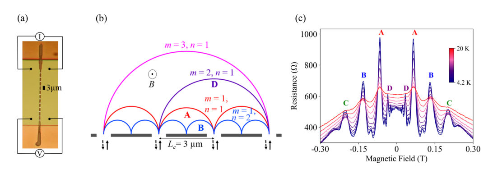
<figcaption class="paper-figure-caption"><b>Fig 1.</b> FIG. 1. (a) Optical micrograph of the 12-aperture perforated-barrier geometry showing the dimensions and the 4-point resistance measurement configuration with current and voltage contacts marked. (b) Schematic representation of selected cyclotron orbits corresponding to different m and n. (c) Magnetoresistance measurements parametrized in T, showing maxima corresponding to different combinations of m and n indicated in (b). Peak A corresponds to m = 1, n = 1; peak B to m = 1, n = 2; peak C to m = 1, n = 3; and peak D to m = 2, n = 1. The resistance values correspond to a single aperture.</figcaption>
</figure>
<figure class="paper-figure-card">
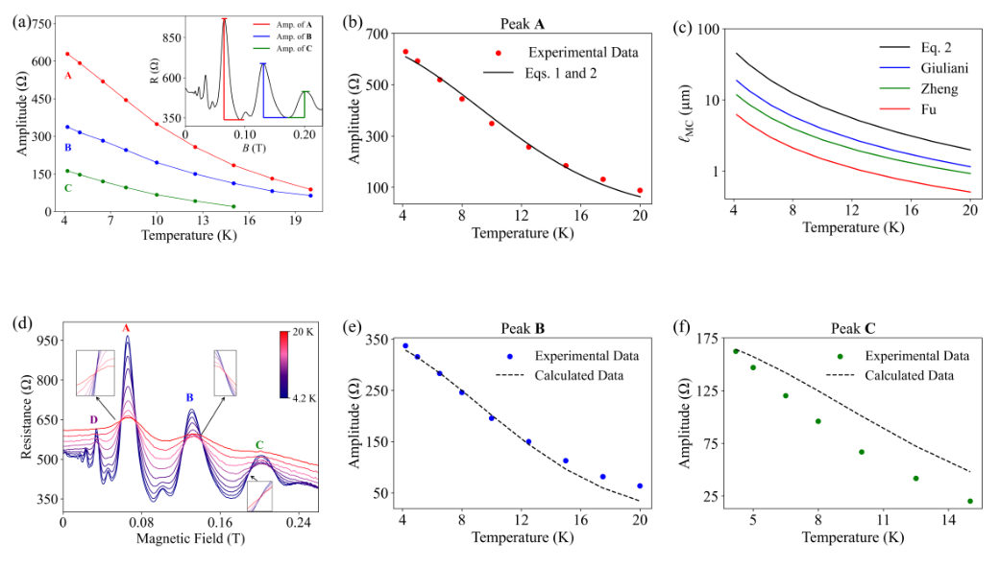
<figcaption class="paper-figure-caption"><b>Fig 2.</b> FIG. 2. (a) Experimentally obtained amplitudes vs T (4.2K ≤T ≤20K) for peaks A, B and C. The inset shows the method for amplitude (Amp) quantification. (b) Fit of experimental amplitude for peak A (m = 1, n = 1) by Eqs. 1 and 2. The red circles denote experimental data and the black line denotes the fit calculated using Eqs. 1 and 2. (c) ℓMC vs T plotted on a semi-logarithmic scale. Values calculated from Eq. 2 are shown by the black line, where ℓ0 is extracted from the fit to experimental data in panel (b). The blue, green, and red lines represent theoretical predictions from Giuliani [2], Zheng [1] and Fu [44], respectively. (d) R(B) vs B and vs dc for peaks A, B and C corresponding to...</figcaption>
</figure>
<figure class="paper-figure-card">
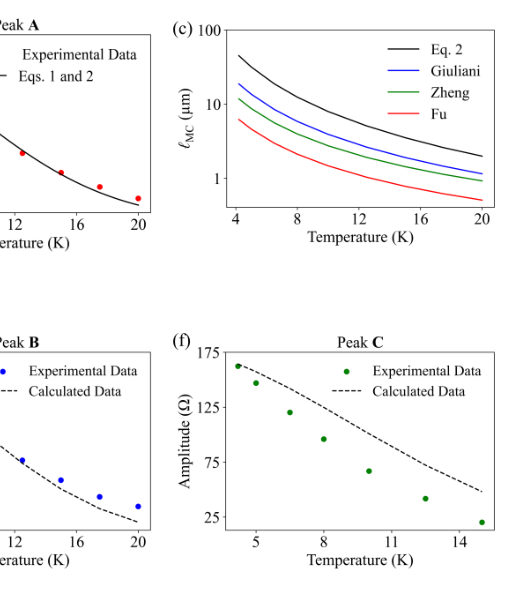
<figcaption class="paper-figure-caption"><b>Fig 3.</b> Figure 2(d) shows R(B) plotted vs both B and dc, for</figcaption>
</figure>
<figure class="paper-figure-card">
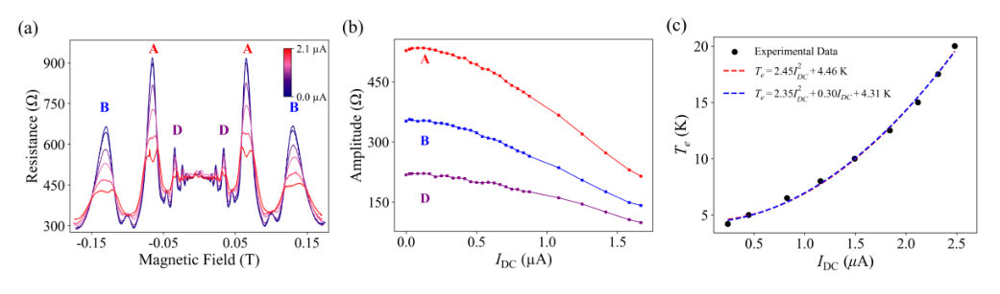
<figcaption class="paper-figure-caption"><b>Fig 4.</b> FIG. 3. (a) Magnetoresistance measurements at T = 4.2 K parametrized in IDC, showing maxima corresponding to different m and n. Peak A corresponds to m = 1, n = 1; peak B to m = 1, n = 2; peak D to m = 2, n = 1. (b) Experimentally obtained amplitudes vs IDC for peaks A, B and D at 4.2 K. (c) Te vs IDC derived from amplitude data for peak A. Black circles represent the data. The red and blue dotted lines represent fits without and with a linear term, respectively. The current and resistance values correspond to a single aperture.</figcaption>
</figure>
<figure class="paper-figure-card">
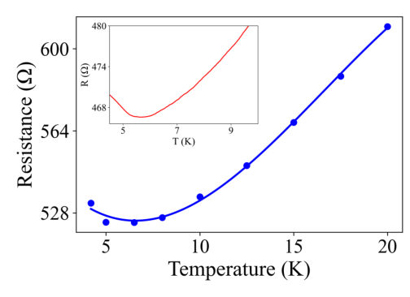
<figcaption class="paper-figure-caption"><b>Fig 5.</b> FIG. 4. R(B = 0) vs T. The circles correspond to data obtained at B = 0 from Fig. 1(c) across T, while the line is a spline fit as guide to the eye. The minimum in R vs T is characteristic of the Gurzhi effect and the phenomenon of superballistic conduction. The inset shows corroborating R(B = 0) vs T data recorded during warmup of the device.</figcaption>
</figure>
</div>

<p><strong>Summary.</strong> The research experimentally investigates electron temperature and electron-electron scattering length in high-mobility GaAs/AlGaAs 2DES using a mesoscopic aperture geometry. By measuring magnetoresistance oscillations as a function of temperature and applied bias current, the authors successfully determined the electron-electron scattering length and quantified how Joule heating elevates the electron temperature above the lattice temperature.</p>
<p><strong>Why it may be interesting.</strong> This work provides a highly controlled experimental platform for studying non-equilibrium electron dynamics in low dimensions. The ability to deterministically control $T_e$ via current injection allows for the direct measurement of scattering mechanisms, which is crucial for understanding energy relaxation in quantum devices.</p>
<details>
<summary>Detailed structure</summary>
<p><strong>Main problem.</strong> The study aims to quantify electron temperatures ($T_e$) and the electron-electron scattering length ($\ell_{ee}$) in two-dimensional electron systems (2DES) under non-equilibrium conditions.</p>
<p><strong>Main result.</strong> The authors established a method to determine $\ell_{ee}$ by analyzing the exponential decay of magnetoresistance peaks with temperature, and they quantified $T_e$ via its quadratic dependence on applied DC bias current ($I_{DC}$).</p>
<p><strong>Method.</strong> Experimental measurements were performed using low-temperature ballistic transport in a mesoscopic multiparallel aperture geometry fabricated on GaAs/AlGaAs heterostructures.</p>
<p><strong>Model / system.</strong> The physical system is a high-mobility 2DES confined in a perforated barrier structure. The analysis uses semiclassical cyclotron orbits and models the magnetoresistance amplitude decay based on electron-electron scattering theory.</p>
<p><strong>Key observables.</strong> Magnetoresistance $R(B)$ peaks, which are analyzed for their amplitude dependence on temperature ($T$) and DC bias current ($I_{DC}$); also measured is $R(B=0)$ vs $T$.</p>
<p><strong>Important parameters / regimes.</strong> Electron temperature ($T_e$), electron-electron scattering length ($\ell_{ee}$), cyclotron orbit diameter, and the applied DC heating current ($I_{DC}$).</p>
<p><strong>Assumptions / limitations.</strong> The amplitude of magnetoresistance maxima is assumed to correlate with the number of electrons reaching the collector; non-equilibrium heating implies $T_e > T$ when $I_{DC} 
eq 0$.</p>
<p><strong>Figures summary.</strong> Figures illustrate the mesoscopic geometry and cyclotron orbits, showing how magnetoresistance peaks vary with temperature. Other figures plot measured amplitudes vs $T$, fitting these to extract $\ell_{ee}(T)$, and show $R(B=0)$ vs $T$ to identify superballistic conductance regimes.</p>
<p><strong>Paper structure.</strong> The paper progresses from establishing the necessity of quantifying $T_e$ and $\ell_{ee}$ in 2DES, detailing the measurement technique using mesoscopic apertures, deriving relationships between peak amplitudes and scattering lengths, and finally applying this framework to study temperature dependence via both thermal cooling and bias-induced Joule heating.</p>
</details>
<details>
<summary>Abstract</summary>
<p>Quantifying electron temperatures and electron-electron scattering lengths is essential for understanding electron transport regimes in two-dimensional systems. To that end, this work experimentally investigates low-temperature ballistic transport using semiclassical cyclotron orbits in a multiparallel aperture geometry. The mesoscopic geometry is fabricated on a GaAs/AlGaAs heterostructure of very high electron mobility. The amplitudes of maxima in magnetoresistance due to ballistic transport are observed to decay exponentially with temperature, allowing determination of the electron-electron scattering length from the data. A quantitative relation between electron temperature and an applied dc bias heating current is established by comparing magnetoresistance peak amplitudes measured as a function of temperature and dc bias, reflecting bias-induced Joule heating. In addition, the resistance measured near zero magnetic field decreases with increasing temperature, providing signatures of superballistic conductance.</p>
</details>
<p><sub><a href="#top">↑ back to top</a></sub></p>

<p><a id="paper-2608.06568"></a></p>
<h3 id="nonreciprocity-reversal-of-magnetoacoustic-attenuation-in-nife-alloy-thin-films"><a href="http://arxiv.org/abs/2608.06568v1">Nonreciprocity reversal of magnetoacoustic attenuation in NiFe alloy thin films</a></h3>
<p><strong>Authors:</strong> Mingran Xu, Kei Yamamoto, Kouta Kondou, Zheng Zhu, Liyang Liao, Kiyohiro Adachi, Tomoka Kikitsu, Daisuke Hashizume, Dirk Grundler, Sadamichi Maekawa, Yoshichika Otani<br>
<strong>Type:</strong> experiment · <strong>Category:</strong> other · <strong>PDF:</strong> <a href="https://arxiv.org/pdf/2608.06568v1">https://arxiv.org/pdf/2608.06568v1</a><br>
<strong>Analysis basis:</strong> full PDF text, analyzed in chunks
<strong>Topic relevance:</strong> <code>spintronics-quantum-optics interface</code> <strong>3/5</strong> · <code>analog quantum simulation</code> <strong>1/5</strong> · <code>correlated / nonlocal dissipation</code> <strong>1/5</strong> · <code>driven-dissipative phase transition</code> <strong>1/5</strong> · <code>exotic spin models in light-matter</code> <strong>1/5</strong> · <code>non-equilibrium dynamics</code> <strong>1/5</strong></p>
<div class="figure-strip-hint">↔ Scroll figures horizontally</div>
<div class="paper-figures-scroll">
<figure class="paper-figure-card">
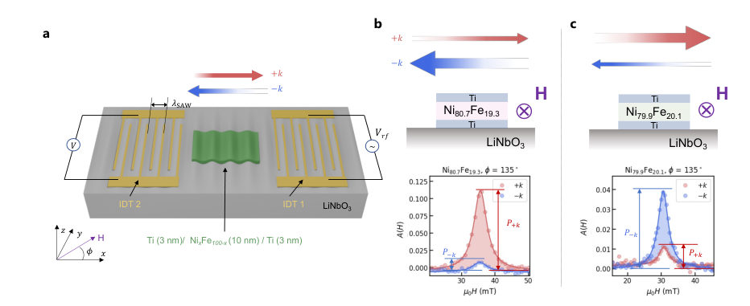
<figcaption class="paper-figure-caption"><b>Fig 1.</b> Fig. 1 Nonreciprocity reversal of magnetoacoustic attenuation in a hybrid device. a, Schematic of the hybrid device: two interdigital transducers (IDT 1 and IDT 2) on a LiNbO3 substrate form a SAW delay line, with a Ti (3 nm)/Nix Fe100−x (10 nm)/Ti (3 nm) thin film patterned on the acoustic propagation path between the IDTs. SAWs launched from either IDT propagate in the +k or −k direction and couple to the film. An in-plane magnetic field H is applied at an angle ϕ from the SAW propagation direction (the x axis). b, c, Upper schematics summarize the propagation-direction- dependent magnetoacoustic attenuation under H, illustrating which SAW direction (+k or −k) is more strongly attenuated...</figcaption>
</figure>
<figure class="paper-figure-card">
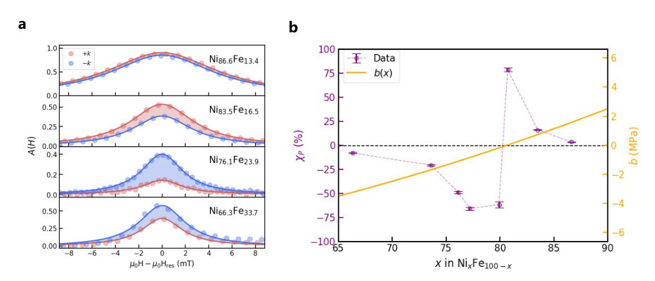
<figcaption class="paper-figure-caption"><b>Fig 2.</b> Fig. 2 Composition-driven reversal of magnetoacoustic attenuation nonreciprocity in NiFe alloys. a, Magne- toacoustic attenuation spectra A(H) measured at room temperature near the spin-wave resonance for counter-propagating SAW±k in Nix Fe100−x at ϕ = 135◦. Shaded regions highlight the difference between the +k and −k responses. b, Nonre- ciprocity ratio χP as a function of Ni concentration, shown together with the composition-dependent coefficient b (calculated from literature values [30, 40]; details are given in the Supplementary Information). χP reverses sign near x = 80 in Nix Fe100−x , coincident with the sign change of b. Error bars represent fitting uncertainties. The closed-form...</figcaption>
</figure>
<figure class="paper-figure-card">
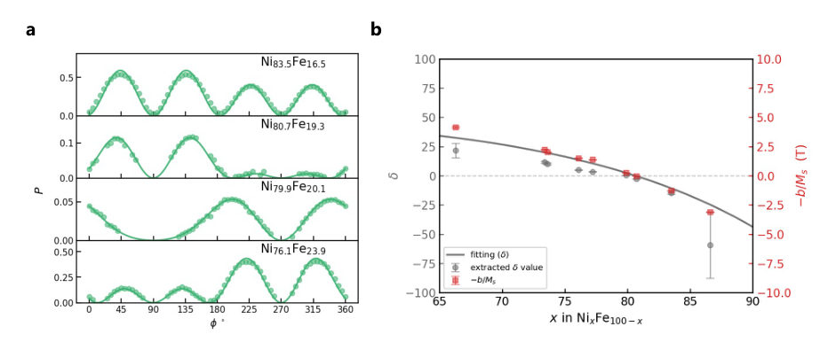
<figcaption class="paper-figure-caption"><b>Fig 3.</b> Fig. 3 Magnetic-field-angle dependence of magnetoacoustic attenuation in Nix Fe100−x alloys. a, Angular dependence of the magnetoacoustic attenuation peak amplitude P for Nix Fe100−x alloys of varying composition; ϕ = 90 corresponds to the Damon–Eshbach configuration. b, Composition dependence of the fitted parameter δ (grey circles, left axis), extracted from the angular analysis in a; error bars denote fitting uncertainties. The solid grey line is a fit to δ(x) = β b(x)/MS(x), with β as the only free parameter. Red squares (right axis) show −b/MS.</figcaption>
</figure>
<figure class="paper-figure-card">
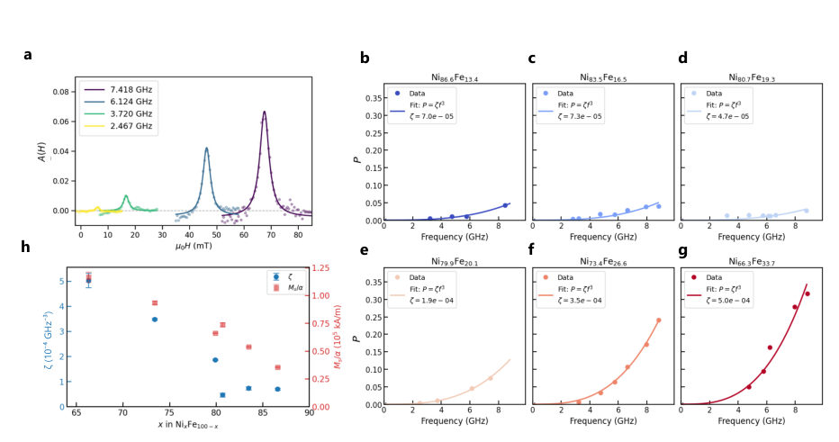
<figcaption class="paper-figure-caption"><b>Fig 4.</b> Fig. 4 Frequency dependence of magnetoacoustic attenuation. a, Representative magnetic-field-dependent mag- netoacoustic attenuation spectra acquired at multiple excitation frequencies (indicated in the labels) for the Ni79.9Fe20.1 device at ϕ = 0◦for SAW+k; the peak amplitude P+k is extracted from Lorentzian fits. b–g, Frequency dependence of P+k for the Nix Fe100−x compositions indicated in each panel (symbols). Solid lines are fits to P(f ) = ζf 3, and the cor- responding fit parameters are shown in the legends; ζ is given in GHz−3 throughout. h, Composition dependence of the fitted coefficient ζ extracted from panels b–g (error bars denote fitting uncertainties). The composition...</figcaption>
</figure>
</div>

<p><strong>Summary.</strong> This work demonstrates that nonreciprocity in magnetoacoustically coupled thin films can be used as a highly sensitive, nanoscale diagnostic tool. By observing the sign reversal of this asymmetry across different alloy compositions, the authors successfully linked the phenomenon to the underlying change in the magnetoelastic coupling coefficient $b$. This establishes a new method for characterizing fundamental magnetic material properties.</p>
<p><strong>Why it may be interesting.</strong> While focused on condensed matter magnetism and acoustics, the ability to use an electrical/acoustic measurement ($\chi_P$) to precisely determine the sign of a fundamental material parameter ($b$) where direct strain measurements fail is analogous to using quantum signatures (like entanglement measures) to probe inaccessible aspects of many-body Hamiltonians.</p>
<details>
<summary>Detailed structure</summary>
<p><strong>Main problem.</strong> The study aims to understand and control the sign of nonreciprocity arising from magnetoacoustic attenuation in ferromagnet thin films.</p>
<p><strong>Main result.</strong> A small compositional change near Permalloy's zero-magnetostriction point causes a measurable sign reversal of the nonreciprocity, confirming that this effect can serve as a nanoscale probe for the magnetoelastic coupling coefficient $b$.</p>
<p><strong>Method.</strong> The research uses Surface Acoustic Waves (SAWs) propagating through $   ext{Ni}<em 100-x>x   ext{Fe}</em>$ thin films deposited on a piezoelectric substrate to measure nonreciprocal attenuation ratios ($\chi_P$).</p>
<p><strong>Model / system.</strong> The physical system is a hybrid device structure involving an $ ext{LiNbO}_3$ substrate, Interdigital Transducers (IDTs), and the magnetic trilayer. The underlying physics involves magnetoacoustic coupling between SAWs and the ferromagnet's magnetization.</p>
<p><strong>Key observables.</strong> Nonreciprocity ratio ($\chi_P$), which measures the asymmetry of SAW attenuation for counter-propagating waves; the sign and magnitude of the magnetoelastic coefficient ($b$).</p>
<p><strong>Important parameters / regimes.</strong> Compositional concentration $x$ (near 80 at.% Ni), magnetic field angle $\phi$, and SAW frequency ($f \approx 2-9 	ext{ GHz}$).</p>
<p><strong>Assumptions / limitations.</strong> The nonreciprocity is attributed to a rotation-based mechanism (MR or Barnett) rather than the shear-strain mechanism, which fails to explain the observed sign reversal.</p>
<p><strong>Figures summary.</strong> Figures illustrate the device setup and show clear evidence of nonreciprocity reversal ($\chi_P$) as the composition $x$ crosses the point where the magnetoelastic coefficient $b$ changes sign. Frequency dependence analysis is also presented.</p>
<p><strong>Paper structure.</strong> The paper establishes the physical mechanism by analyzing how compositional tuning controls the sign of $\chi_P$. It then uses theoretical modeling (comparing shear-strain vs. rotation mechanisms) to pinpoint the origin, culminating in demonstrating that nonreciprocity acts as a sensitive probe for $b$ near zero.</p>
</details>
<details>
<summary>Abstract</summary>
<p>Nonreciprocity, the asymmetry of transport, underlies technologies from the diode to the microwave isolator. In a ferromagnet, a surface acoustic wave generates an elliptical effective field with propagation-locked handedness, breaking the reciprocity of its propagation. Despite decades of study on this phenomenon, a method for controlling the sign of the nonreciprocity has remained elusive. Here we observe a sign reversal in Ni$_x$Fe$_{100-x}$ films. A 0.8 at.% change across Permalloy's zero-magnetostriction composition, where the magnetoelastic coefficient $b$ changes sign, reverses the handedness of the elliptical effective field and thereby the nonreciprocity, from 78.6% to -61.8%. Angle-dependent measurements and spin-wave-ellipticity modelling show that reversing the sign of $b$ reverses the handedness of the elliptically polarized effective field. Aided by cubic frequency scaling, we resolve the sign of $b$ down to -0.05 MPa in a 10-nm film, establishing nonreciprocity as a nanoscale probe of magnetoelastic coupling.</p>
</details>
<p><sub><a href="#top">↑ back to top</a></sub></p>

<p><a id="paper-2608.07099"></a></p>
<h3 id="topological-surface-altermagnets-in-ssh-stacked-magnetic-layers"><a href="http://arxiv.org/abs/2608.07099v1">Topological surface altermagnets in SSH-stacked magnetic layers</a></h3>
<p><strong>Authors:</strong> Rui Chen, Bin Zhou, Dong-Hui Xu<br>
<strong>Type:</strong> theory · <strong>Category:</strong> other · <strong>PDF:</strong> <a href="https://arxiv.org/pdf/2608.07099v1">https://arxiv.org/pdf/2608.07099v1</a><br>
<strong>Analysis basis:</strong> full PDF text, analyzed in chunks
<strong>Topic relevance:</strong> <code>analog quantum simulation</code> <strong>3/5</strong> · <code>exotic spin models in light-matter</code> <strong>3/5</strong> · <code>Keldysh / 2PI / non-Gaussian methods</code> <strong>1/5</strong> · <code>spintronics-quantum-optics interface</code> <strong>1/5</strong></p>
<div class="figure-strip-hint">↔ Scroll figures horizontally</div>
<div class="paper-figures-scroll">
<figure class="paper-figure-card">
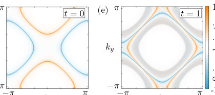
<figcaption class="paper-figure-caption"><b>Fig 1.</b> FIG. 1. (a) Schematic illustration of the SSH stacking of two-dimensional magnetic layers. The alternating layers, col- ored by blue and gray, are coupled by alternating interlayer hoppings t1 and t2. The top surface displays the surface Bril- louin zone with high-symmetry points Γ, X, M, and Y . (b), (c) Energy spectra of the finite layered system along high- symmetry paths for (b) vanishing intra-layer non-magnetic hopping t = 0 and (c) finite intra-layer hopping t = 1. Gray areas denote the bulk bands, while the red lines highlight the topologically protected surface states emerging within the bulk gap. (d), (e) The corresponding spin polarization of the surface local density of states...</figcaption>
</figure>
<figure class="paper-figure-card">
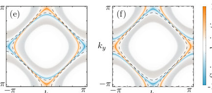
<figcaption class="paper-figure-caption"><b>Fig 2.</b> FIG. 2. Transport signatures and surface spin polarization of the system in the absence (a)-(b) and presence (e)-(f) of a per- pendicular electric field. (a) Angle-dependent spin splitter an- gle α(1, θ) for the outermost surface layer. (b) Layer-resolved spin splitter angle α(z, 0) across the finite slab. (c) Angle- dependent total spin splitter angle α(θ), (d) evolution of the total spin splitter angle α(θ) with respect to the strength of the external electric field V , and (e)-(f) spin-resolved surface local density of states in the momentum space. In (e) and (f), the dashed lines denote the contours of the spin-polarized surface states at V = 0, extracted from Fig. 1(e).</figcaption>
</figure>
<figure class="paper-figure-card">
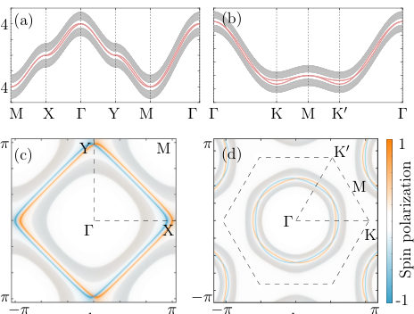
<figcaption class="paper-figure-caption"><b>Fig 3.</b> FIG. 3. Generalization of topological surface altermagnetism to p-wave and f-wave symmetries. (a, b) Projected one- dimensional energy band structures for the p-wave (a) and f-wave (b) altermagnetic systems. The projected bulk bands are depicted in gray, while the topologically protected surface states emerging within the direct bulk gap are highlighted in red. (c, d) The corresponding spin-polarized surface local density of states in momentum space for the p-wave (c) and f-wave (d) configurations. In (d), the dashed lines outline the Brillouin zone boundaries.</figcaption>
</figure>
</div>

<p><strong>Summary.</strong> This theoretical work demonstrates how stacking magnetic layers in an SSH pattern can create topological surface altermagnetism. By breaking local symmetry at the boundary of a bulk antiferromagnet, robust spin-polarized surface states emerge within the energy gap. These exotic surface properties are predicted to be detectable via a measurable net spin polarization induced by an external perpendicular electric field.</p>
<p><strong>Why it may be interesting.</strong> While focused on condensed matter magnetism, the concept of engineering robust, symmetry-protected electronic states at boundaries using lattice models is highly relevant to understanding engineered quantum materials for spintronics applications.</p>
<details>
<summary>Detailed structure</summary>
<p><strong>Main problem.</strong> The work proposes a method to engineer topological surface altermagnetism by stacking magnetic layers using a Su-Schrieffer-Heeger (SSH) pattern.</p>
<p><strong>Main result.</strong> Breaking the local symmetry at the boundary of an antiferromagnetic SSH stack generates robust, topologically protected surface altermagnetism within the bulk's topological gap.</p>
<p><strong>Method.</strong> Theoretical analysis involving tight-binding models, calculation of spin-resolved LDOS, and characterization using the Zak phase associated with chiral symmetry.</p>
<p><strong>Model / system.</strong> The system is modeled by SSH stacking of 2D magnetic layers. The bulk behaves as a PT-symmetric antiferromagnet, while surface states emerge due to boundary symmetry breaking.</p>
<p><strong>Key observables.</strong> Topological gap containing surface states; spin separation in LDOS; layer-resolved and total spin splitter angle ($\alpha$); response to perpendicular electric field ($V$).</p>
<p><strong>Important parameters / regimes.</strong> The coupling strengths ($t_1, t_2$) defining the SSH pattern; the applied perpendicular electric field ($V$).</p>
<p><strong>Assumptions / limitations.</strong> The approach is generalized to different types of surface altermagnetism (p-wave, f-wave); the measurement relies on detecting transport signatures induced by $V$.</p>
<p><strong>Figures summary.</strong> Figures illustrate energy spectra showing topological surface states; Fig. 2 shows how applying an electric field ($V$) induces a non-zero total spin splitter angle ($\alpha$), which is zero when $V=0$ due to symmetry.</p>
<p><strong>Paper structure.</strong> The paper develops the SSH model Hamiltonian, analyzes the bulk PT-symmetric antiferromagnetism, demonstrates that boundary breaking creates surface altermagnetism, and finally uses transport signatures (spin splitter angle) under an electric field to confirm this topological effect.</p>
</details>
<details>
<summary>Abstract</summary>
<p>Surface altermagnetism opens new avenues in spintronics by unlocking altermagnetic spin-splitting at the boundaries of conventional antiferromagnets, bypassing the strict symmetry requirements of bulk altermagnets. In this work, we propose creating topological surface altermagnet by stacking magnetic layers in a Su-Schrieffer-Heeger pattern. We show that while the bulk of the system is a standard antiferromagnet with degenerate bands protected by $PT$ symmetry, breaking the local symmetry at the boundary gives rise to a topologically protected surface altermagnetic state residing within the topological gap. Furthermore, we propose that this effect can be experimentally detected by applying a perpendicular electric field. Besides, this approach can be readily generalized to surface altermagnetism of different types. Our work establishes topological boundaries as a natural platform for surface altermagnetism, offering a distinct route for realizing and manipulating topological surface altermagnets.</p>
</details>
<p><sub><a href="#top">↑ back to top</a></sub></p>

<p><a id="paper-2608.06793"></a></p>
<h3 id="ultralow-p-type-contact-resistance-for-ultra-nanoscaled-2d-materials-transistors"><a href="http://arxiv.org/abs/2608.06793v1">Ultralow p-type contact resistance for ultra-nanoscaled 2D-materials transistors</a></h3>
<p><strong>Authors:</strong> Ying Xiong, Tong Su, Qiang Li, Yee Sin Ang, Lain-Jong Li, L. K. Ang<br>
<strong>Type:</strong> theory · <strong>Category:</strong> other · <strong>PDF:</strong> <a href="https://arxiv.org/pdf/2608.06793v1">https://arxiv.org/pdf/2608.06793v1</a><br>
<strong>Analysis basis:</strong> full PDF text, analyzed in chunks
<strong>Topic relevance:</strong> <code>Keldysh / 2PI / non-Gaussian methods</code> <strong>3/5</strong> · <code>spintronics-quantum-optics interface</code> <strong>2/5</strong> · <code>Kondo &amp; dissipative impurity</code> <strong>1/5</strong> · <code>methods for driven-dissipative</code> <strong>1/5</strong> · <code>non-equilibrium dynamics</code> <strong>1/5</strong></p>
<div class="figure-strip-hint">↔ Scroll figures horizontally</div>
<div class="paper-figures-scroll">
<figure class="paper-figure-card">
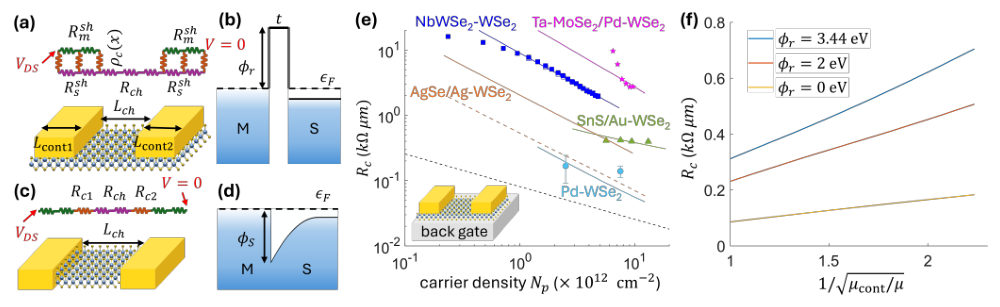
<figcaption class="paper-figure-caption"><b>Fig 1.</b> FIG. 1. Modeling contact resistance for metal-2D semiconductors. (a, c) Schematic diagrams of vertical (a) and edge (c) contacts; the contact resistance is governed by vdW barrier (b) and Schottky barrier (d) respectively. (e) Rc as a function of Np for the vertical contact. Symbols denote experimental data, and solid lines denote theoretical models. η = 0 (ktr conserving) produces calculations for NbWSe2-WSe2 [19] (ϕr = 1.65 eV and t = 0.3526 nm) and Ta-MoSe2/Pd-WSe2 [17] (ϕr = 1.1 eV, and t = 0.376 nm). Here, t is extracted from DFT calculations as the interlayer distance for AA stacking. η = 1 (ktr nonconserving) is used for SnS/Au-WSe2 [18] (with ϕr=0, t = 1) and for Pd-WSe2 [21] (with...</figcaption>
</figure>
<figure class="paper-figure-card">
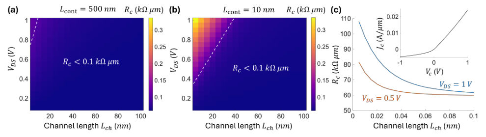
<figcaption class="paper-figure-caption"><b>Fig 2.</b> FIG. 2. Contact resistance scaling as a function of channel length Lch and applied voltages VDS. (a, b) Rc of Pd-WSe2 [21] as a function of VDS and Lch for contact lengths Lcont=500 nm (a) and 10 nm (b) at Np = 8×1012 cm−2. Dashed white lines indicate the contour Rc = 0.1 kΩµm. (c) Rc increases as Lch decreases. (inset) Current density Jc as a function of voltage drop across the contact region Vc shows saturation behaviour for large negative Vc. We set Lcont = 500 nm in (c).</figcaption>
</figure>
<figure class="paper-figure-card">
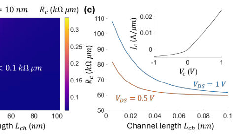
<figcaption class="paper-figure-caption"><b>Fig 3.</b> Fig. 1e shows our numerical calculation of Rc as a func- tion of Np for a range of metal-monolayer WSe2 vertical contact systems compared with recent experimental mea- surements (symbols) [17–19, 21]. To simulate the exper- iments of Ta-MoSe2/Pd-WSe2 and SnS/Au-WSe2 con- tacts, we employed TLM approach to account for both the current flowing between MoSe2 (SnS) and WSe2 as well as current between Pd (Au) and MoSe2 (SnS). See SI for detailed calculations and parameters used. Here the channel length Lch is ranged from 50 to 200 nm. We see that Rc of p-contact remains high compared to n-contact. To further lower Rc, we propose a 2D topolog- ical semimetal AgSe on Ag substrate to be a new...</figcaption>
</figure>
<figure class="paper-figure-card">
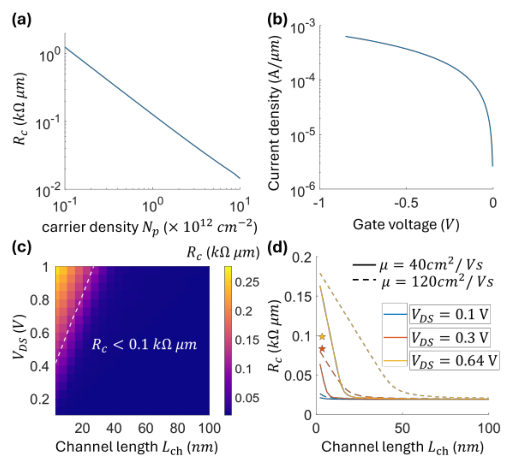
<figcaption class="paper-figure-caption"><b>Fig 4.</b> FIG. 3. Contact resistance for CuS-WSe2 system. (a) Contact resistance Rc as a function of carrier density. (b) Current density versus gate voltage. We have set ϕS = 10 meV, VDS = 0.64 V, Lch = 100 nm, µ = 60 cm2/Vs, and channel gate capacitance 0.02 F/m2 for a 10 nm thick HfO2 top gate. (c) Rc increases for larger VDS and shorter Lch. White dashed line indicates Rc = 0.1 kΩµm. (d) Rc increases linearly as Lch decreases at small Lch. Markers denote first- principle quantum atomistic calculations at 3.4 nm. For (c) and (d), we set to Np ≈7.3 × 1012 cm−2.</figcaption>
</figure>
<figure class="paper-figure-card">
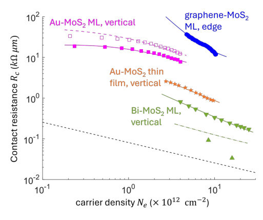
<figcaption class="paper-figure-caption"><b>Fig 5.</b> FIG. 4. Contact resistance of n-type 2D semiconductor as a function of semiconductor electron density Ne. Filled (hol- low) markers denotes the experimental measurements of Rc at VDS = 1 V (VDS = 0.1). Solid (dashed) lines are by using our model with η = 0 at VDS = 1 V (VDS = 0.1 V). The dash-dotted line is obtained by taking η = 0, VDS = 1 V, ϕr = 0 and t = 0, which indicates the lowest Rc for Bi-MoS2 ML contact predicted by our theory. In our calculations, Lch for all vertical contacts is set as the shortest channel length used in the respective experiments. For Bi-MoS2, Lch = 50 nm for Ref. [21] (upright green triangles) and Lch = 100 nm for Ref. [11] (inverted greeen triangles); for...</figcaption>
</figure>
</div>

<p><strong>Summary.</strong> This work addresses the critical issue of high contact resistance limiting 2D transistor performance. By developing advanced self-consistent models for both vertical and edge contacts, the authors predict that current saturation limits downscaling below $10 	ext{ nm}$. They propose using specific topological semi-metals as electrodes to achieve near-quantum limit contact resistances.</p>
<p><strong>Why it may be interesting.</strong> While focused on semiconductor physics rather than core quantum information protocols, the detailed modeling of interface transport phenomena, tunneling probabilities, and scaling laws is highly relevant to understanding energy dissipation in nanoscale quantum devices.</p>
<details>
<summary>Detailed structure</summary>
<p><strong>Main problem.</strong> High contact resistance remains a major bottleneck for realizing practical, ultra-nanoscaled (sub-10 nm) two-dimensional (2D) materials transistors, particularly for p-type operation.</p>
<p><strong>Main result.</strong> The authors developed self-consistent models identifying that source-limited current saturation is the key challenge for scaling down 2D FETs. They propose using topological semi-metals as electrodes to achieve predicted contact resistances approaching the quantum limit ($< 100 \, \Omega\mu	ext{m}$).</p>
<p><strong>Method.</strong> The study employs self-consistent theoretical modeling, developing separate frameworks for vertical and edge contacts by solving coupled differential equations based on tunneling current calculations.</p>
<p><strong>Model / system.</strong> The physical system is a Metal-2D semiconductor-Metal (MSM) device, focusing on p-type 2D semiconductors like WSe2. The model incorporates concepts like Schottky barriers, generalized Transmission Line Models (TLM), and analyzes scaling laws based on channel length and doping.</p>
<p><strong>Key observables.</strong> Contact Resistance ($R_c$), Total Resistance ($R_{	ext{tot}}$), Channel Resistance ($R_{	ext{ch}}$), Current density ($J$).</p>
<p><strong>Important parameters / regimes.</strong> Channel length ($   ext{L}<em ext_DS="ext{DS">{    ext{ch}}$) down to sub-10 nm, doping concentration ($N_p$), applied voltage ($V</em>$).}</p>
<p><strong>Assumptions / limitations.</strong> The model assumes metal electrodes have negligible resistance and that the analysis can be extended from computationally feasible few-nanometer scales.</p>
<p><strong>Figures summary.</strong> Figures illustrate schematics for vertical and edge contacts, showing $R_c$ scaling with $   ext{L}_{    ext{ch}}$ and $V_{	ext{DS}}$, and comparing model predictions against experimental data using various electrode materials.</p>
<p><strong>Paper structure.</strong> The paper systematically develops contact resistance models for both vertical and edge geometries. It analyzes the scaling behavior of $R_c$ with device parameters, identifies current saturation as a limiting factor, and proposes new material combinations (e.g., topological semi-metals) to overcome this bottleneck.</p>
</details>
<details>
<summary>Abstract</summary>
<p>High contact resistance is one of the main bottlenecks for practical two-dimensional (2D) materials transistors, especially for p-type transistors and future 2D ultra-nanoscaled (sub-10 nm) FETs (PMOS + CMOS). We develop self-consistent contact resistance models for metal-2D semiconductor-metal devices to capture the essential interface physics for both vertical and edge configurations. Our calculations have been verified with various recent experiments of p-type and n-type contacts. For a given set of materials, the model determines the scaling of contact resistance over a wide range of device parameters including channel length (100s nm down to sub-10 nm), doping and mobility of the 2D materials, contact length of the electrodes, and applied voltages. These results identify the key factors in order to reduce the contact resistance for p-type 2D semiconductor WSe$_2$ towards the sub-10 nm channel length scale that are readily to be realized by future experiments. It is found that the effect of source-limited current saturation is the key challenge for down scaling 2D FET to sub-10 nm channel length. Two topological semi-metals as potential electrodes are proposed for 2D p-type semiconducting WSe$_2$ with our predicted contact resistance $R_c<$ 100 $Ω\; {\rm μm}$ approaching the quantum limit. Our model is also verified with the computational expensive full quantum atomistic model that is currently limited to a few nm scale.</p>
</details>
<p><sub><a href="#top">↑ back to top</a></sub></p>

<p><a id="paper-2608.07218"></a></p>
<h3 id="perfect-absorption-by-metal-contacted-two-dimensional-systems-with-ultra-proximate-reflectors"><a href="http://arxiv.org/abs/2608.07218v1">Perfect absorption by metal-contacted two-dimensional systems with ultra-proximate reflectors</a></h3>
<p><strong>Authors:</strong> Kirill Kapralov, Vladislav Atlasov, Alina Khisameeva, Viacheslav Muravev, Dmitry Svintsov<br>
<strong>Type:</strong> theory · <strong>Category:</strong> other · <strong>PDF:</strong> <a href="https://arxiv.org/pdf/2608.07218v1">https://arxiv.org/pdf/2608.07218v1</a><br>
<strong>Analysis basis:</strong> full PDF text, analyzed in chunks
<strong>Topic relevance:</strong> <code>interference shaping light</code> <strong>3/5</strong> · <code>Keldysh / 2PI / non-Gaussian methods</code> <strong>1/5</strong> · <code>driven-dissipative phase transition</code> <strong>1/5</strong> · <code>methods for driven-dissipative</code> <strong>1/5</strong></p>
<div class="figure-strip-hint">↔ Scroll figures horizontally</div>
<div class="paper-figures-scroll">
<figure class="paper-figure-card">
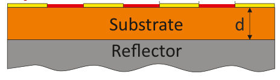
<figcaption class="paper-figure-caption"><b>Fig 1.</b> FIG. 1. Structures of metal-2DES absorbers. One- dimensional periodic structure comprising 2DES of length l and metal contacts of length L, illuminated by normally in- cident electromagnetic wave without (a) and with (b) a per- fectly conducting reflector separated from the 2DES plane by a dielectric substrate of thickness d.</figcaption>
</figure>
<figure class="paper-figure-card">
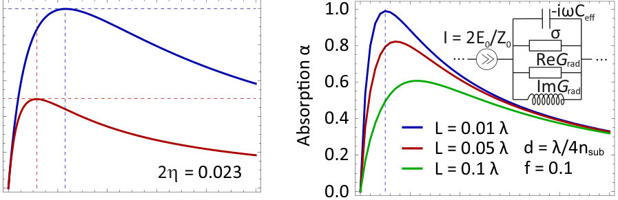
<figcaption class="paper-figure-caption"><b>Fig 2.</b> FIG. 2. Perfect absorption in metal-contacted 2d electron systems. (a) Absorption α as a function of the filling factor f for the structure without a reflector with nsub = 1 (red curve) and with a reflector with nsub = 2 (blue curve). The horizontal dashed lines indicate the corresponding maximum absorption levels, while the vertical dashed lines mark the optimal filling factors: the red dashed line corresponds to f = η, and the blue dashed line corresponds to f = 2η. (b) Absorption α as a function of the conductivity η for the structure with a reflector with nsub = 2 for different grating periods. The vertical dashed line mark the optimal conductivity η = f/2. Inset: an equivalent circuit...</figcaption>
</figure>
<figure class="paper-figure-card">
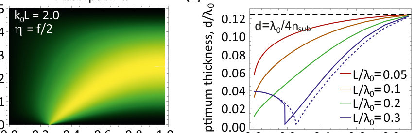
<figcaption class="paper-figure-caption"><b>Fig 3.</b> FIG. 3. Perfect absorption with deep-subwavelength reflectors. (a) Absorption α of the metal-2DES grating with a reflector vs the normalized grating period k0L and the normalized distance nsubd/λ0 at the optimal filling factor f = 2η = 0.023. The white dashed line marks the limiting value k0L = π/nsub, above which electromagnetic matching cannot be achieved. The black solid line shows the optimal d yielding 100% absorption (b) Absorption α vs the filling factor f and the normalized distance nsubd/λ0 computed for a fixed grating period k0L = 0.5 and conductivity 2η = 0.023. (c) Absorption α vs the filling factor f and the normalized distance nsubd/λ0 for a large grating period k0L = 2.0 and...</figcaption>
</figure>
<figure class="paper-figure-card">
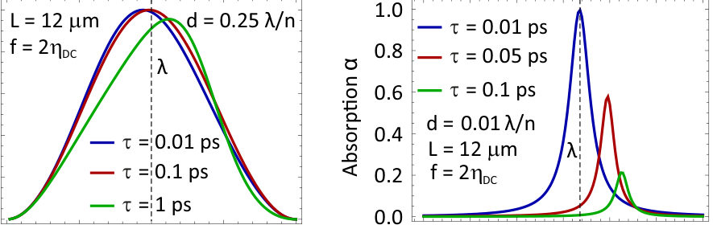
<figcaption class="paper-figure-caption"><b>Fig 4.</b> FIG. 4. Resonant absorption in metal-2DES structures with a reflector. Absorption spectra calculated within the Drude model at carrier density ne = 1012 cm−2, effective mass 0.24me and filling factor f = 2η(ω = 0) for different momentum relaxation times τ for a conventionally placed reflector at the distance d = λres/(4nsub) which equals 375 µm (left) and for for an ultrathin substrate with d = 0.01λres/nsub which equals 265 nm (right).</figcaption>
</figure>
</div>

<p><strong>Summary.</strong> This paper theoretically demonstrates how to achieve near-perfect absorption of electromagnetic waves using a periodic metasurface composed of 2D electron systems coupled with metal contacts. By incorporating a perfect reflector, the authors boost absorbance to $100\%$ and reveal that optimal performance can occur at distances much smaller than conventionally expected. This work is significant for designing high-efficiency optical detectors based on advanced condensed matter structures.</p>
<p><strong>Why it may be interesting.</strong> The work provides advanced theoretical tools for engineering light-matter interaction in low-dimensional materials, which is highly relevant to quantum optics and open quantum systems where engineered cavities or plasmonic structures are used to enhance coupling rates.</p>
<details>
<summary>Detailed structure</summary>
<p><strong>Main problem.</strong> The primary challenge is that electromagnetic absorbance by typical two-dimensional electron systems (2DES) is significantly less than unity, limiting their use in photodetection and optical studies.</p>
<p><strong>Main result.</strong> By engineering a periodic structure of 2D sections connected by metal contacts and placing it above a perfect reflector, the authors demonstrate achieving near-perfect ($\approx 100\%$) absorbance. Furthermore, they show that optimal performance can occur at extremely small distances ($d 	o 0$) to the reflector.</p>
<p><strong>Method.</strong> The analysis employs semi-analytical solutions of Maxwell's equations, utilizing Fourier transforms and Green's functions derived from solving the scattering problem for the engineered metasurface structure.</p>
<p><strong>Model / system.</strong> The system modeled is a periodic array (metasurface) consisting of narrow 2D electron sections separated by wide, perfectly conducting metal contacts. This entire unit cell can be placed above a perfect electromagnetic reflector separated by a dielectric substrate.</p>
<p><strong>Key observables.</strong> Absorbance ($\alpha$), which is the primary diagnostic quantity; it is related to the material conductivity and geometric parameters.</p>
<p><strong>Important parameters / regimes.</strong> Filling factor ($f = l/L$), dimensionless conductivity ($\eta$), optimal distance to reflector ($d$), and substrate dielectric constant ($n_{	ext{sub}}$).</p>
<p><strong>Assumptions / limitations.</strong> The analysis relies on linking the local electric field via Green's functions, and later approximations use a lumped circuit model for simplicity.</p>
<p><strong>Figures summary.</strong> Figures illustrate the physical structures (with/without reflector) and show calculated absorbance ($\alpha$) versus filling factor ($f$) or conductivity ($\eta$), demonstrating the enhancement provided by the back reflector.</p>
<p><strong>Paper structure.</strong> The paper progresses from establishing the low baseline absorbance of 2DES, to introducing the periodic structure with metal contacts for initial enhancement. It then analyzes the inclusion of a perfect reflector, deriving conditions for $100\%$ absorption and exploring the non-intuitive dependence on the separation distance $d$.</p>
</details>
<details>
<summary>Abstract</summary>
<p>Electromagnetic absorbance by most two-dimensional electron systems is typically well below unity, which hinders both practical applications in photodetection and fundamental studies of their optical properties. Here, we show that a periodic structure comprised of narrow two-dimensional sections connected with wide perfectly conducting metal sections enables large absorbance. It reaches 50 \% provided the filling factor by the two-dimensional system $f$ equals its dimensionless conductivity $η=σZ_0/2$, where $Z_0$ is the free-space impedance. The absorbance is further raised to 100 \% if the periodic structure is placed above a perfectly conducting electromagnetic reflector, and provided $f=2η$. Surprisingly, the optimal distance between two-dimensional system and reflector may fall well below the quarter of incident wavelength $λ_0/4$, which was assumed as conventional absorption enhancement condition in optics. For low filling factors $f\ll1$, large dielectric constants of the substrate, and grating periods comparable with $λ_0$, the optimal distance to reflector tends to zero. Above the critical values of the grating geometrical parameters, the absorbance maximum ceases to exist. The critical behavior manifests as a large-amplitude resonance in 'dirty' two-dimensional system with purely real conductivity, while enhancement of carrier momentum relaxation time lowers the resonant peak. Such resonance mimics the plasmonic one, but does not rely on high electron mobility.</p>
</details>
<p><sub><a href="#top">↑ back to top</a></sub></p>

<p><a id="paper-2608.07052"></a></p>
<h3 id="magneto-optical-signal-from-math896math-based-heusler-thin-films-in-moke-and-bls"><a href="http://arxiv.org/abs/2608.07052v1">Magneto-optical signal from $\mathrm{Co_2Mn}$-based Heusler thin films in MOKE and BLS</a></h3>
<p><strong>Authors:</strong> Anna Maria Friedel, Nicolas Fermon, Tobias Böttcher, Sébastien Petit-Watelot, Stéphane Andrieu, Philipp Pirro<br>
<strong>Type:</strong> experiment · <strong>Category:</strong> other · <strong>PDF:</strong> <a href="https://arxiv.org/pdf/2608.07052v1">https://arxiv.org/pdf/2608.07052v1</a><br>
<strong>Analysis basis:</strong> full PDF text, analyzed in chunks
<strong>Topic relevance:</strong> <code>spintronics-quantum-optics interface</code> <strong>3/5</strong> · <code>exotic spin models in light-matter</code> <strong>1/5</strong> · <code>non-equilibrium dynamics</code> <strong>1/5</strong></p>
<div class="figure-strip-hint">↔ Scroll figures horizontally</div>
<div class="paper-figures-scroll">
<figure class="paper-figure-card">
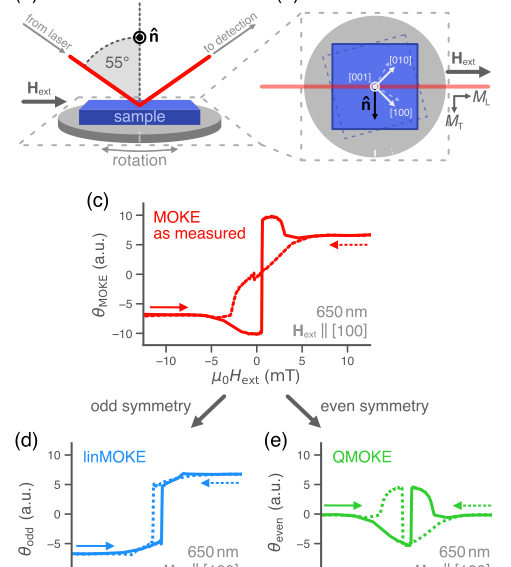
<figcaption class="paper-figure-caption"><b>Fig 1.</b> Figure 1: MOKE detection and symmetry separation (a) Schematic of the MOKE setup, with the sample positioned on a rotatable plate in an external field parallel to the incidence plane of light defined by the normal ˆn. (b) Top view on the sample plane with the crystal coordinate system of the Co2MnX compounds. (c) MOKE hysteresis loop as measured for Co2MnSi at λ = 650 nm and Hext ∥[100]. In a post-processing step, the signal is separated into (d) anti-symmetric part attributed to the linMOKE and (e) symmetric part attributed to the QMOKE.</figcaption>
</figure>
<figure class="paper-figure-card">
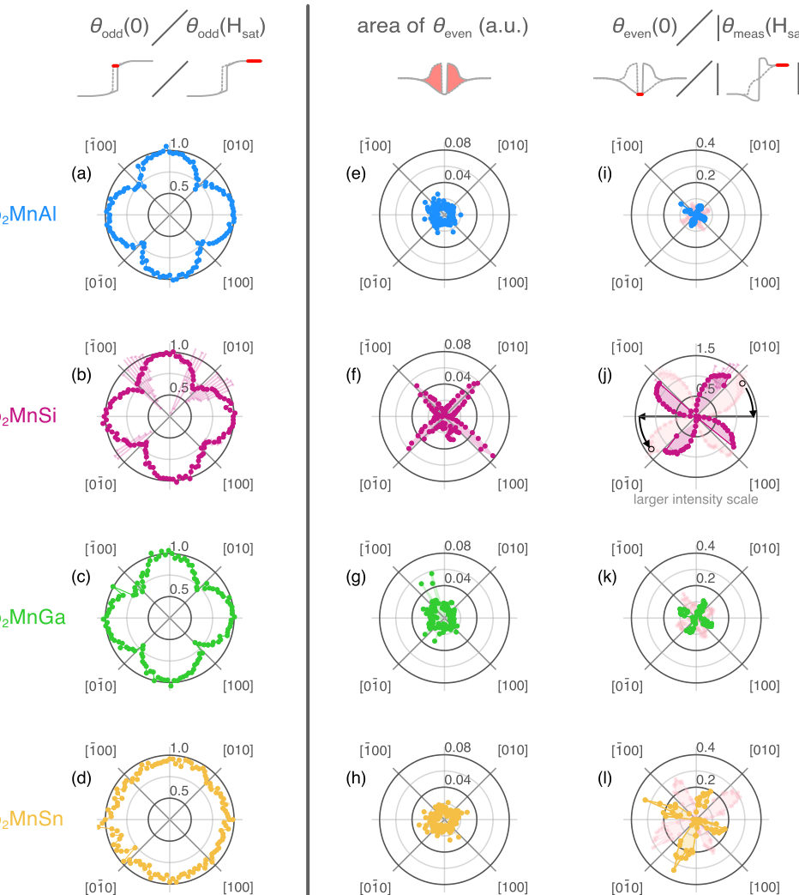
<figcaption class="paper-figure-caption"><b>Fig 2.</b> Figure 2: Anisotropy in the MOKE signal of various Co2MnX compounds for λ = 636 nm. (a-d) The magneto-crystalline anisotropy shows in the relative remanence in the odd Kerr rotation θodd (0) /θodd (Hsat) attributed to the linMOKE. The magneto-optical anisotropy shows in the integrated QMOKE loop area (e-h) as well as the relative remanent QMOKE θeven (0) /|θmeas (Hsat) | (i-l), which additionally reveals a sign change with the opposite sign reflected by the light pink shade. Note that while the schematic illustrations only mark the relevant points for the decreasing field branch for (a-d) and (i-l), both increasing and decreasing branch were evaluated and averaged.</figcaption>
</figure>
<figure class="paper-figure-card">
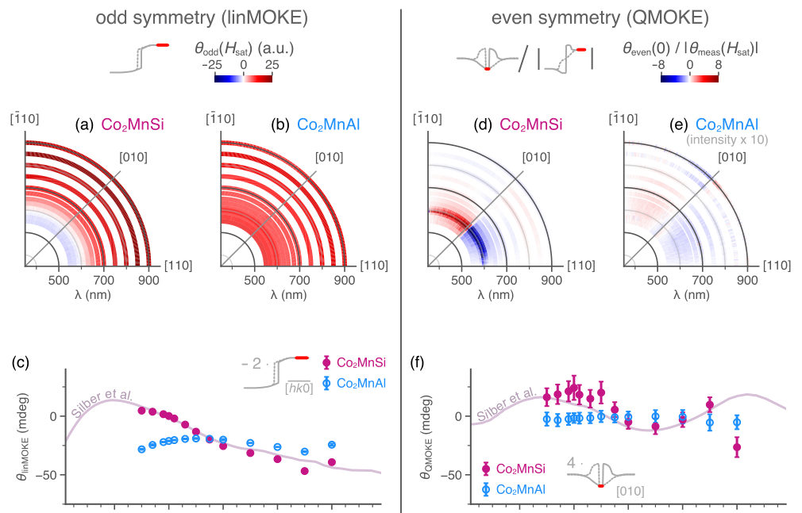
<figcaption class="paper-figure-caption"><b>Fig 3.</b> Figure 3: Wavelength dependence of the linear and quadratic MOKE effect in Co2MnSi and Co2MnAl. (a, b) The linMOKE rotation in saturation θodd (Hsat) as a function of the crystal orientation [hkl] ∥Hext ⊥ˆn for Co2MnSi and Co2MnAl. (c) The mean value over all directions is compared to the reference study for Co2MnSi by Silber et al.14,38, where the proportionality factor −2 accounts for the double layer thickness and different coordinate convention. (d, e) The even QMOKE rotation in remanence θeven (0) in relation to the saturation amplitude of the measured loops θmeas (Hsat). A significant QMOKE contribution is only detected for Co2MnSi. (f) The wavelength dependence along the [010]...</figcaption>
</figure>
<figure class="paper-figure-card">
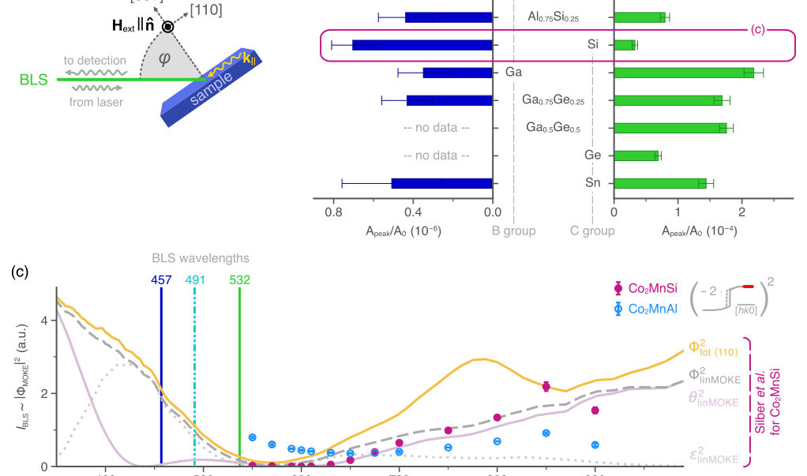
<figcaption class="paper-figure-caption"><b>Fig 4.</b> Figure 4: Correlation of MOKE and BLS signal. (a) Schematic of the BLS backscattering geometry. (b) Normalised BLS peak amplitudes for the different Co2MnX compounds from BLS spectra of thermal spin waves measured for two wavelengths λBLS = 532 nm and λBLS = 457 nm with φ457 nm = 2.5◦and φ532 nm = 10◦. (c) Squared linear Kerr rotation θ2 linMOKE for Co2MnSi and Co2MnAl from Figure 3c. Additionally, the spectral reference curves for Co2MnSi show the squared total Kerr angle Φ2 tot ⟨110⟩, linear Kerr angle Φ2 linMOKE , linear Kerr rotation θ2 linMOKE and linear Kerr ellipticity ε2 linMOKE from the reference study by Silber et al.14,38.</figcaption>
</figure>
</div>

<p><strong>Summary.</strong> This work investigates the magneto-optical properties of $\mathrm{Co_2Mn}$-based Heusler thin films using both MOKE and BLS. The key finding is that the distinct spectral behavior observed in MOKE (especially quadratic contributions) directly correlates with the intensity variations seen in BLS measurements. This establishes a powerful experimental methodology for selecting optimal wavelengths when probing magnetic excitations.</p>
<p><strong>Why it may be interesting.</strong> While primarily experimental condensed matter physics, the detailed study of spin wave dynamics and magneto-optical response provides fundamental insights into magnetic order parameters and their coupling to optical probes, which is relevant for understanding quantum magnetodynamics.</p>
<details>
<summary>Detailed structure</summary>
<p><strong>Main problem.</strong> To investigate the magneto-optical response of $\mathrm{Co_2Mn}$-based Heusler thin films using both Magneto-Optical Kerr Effect (MOKE) and Brillouin Light Scattering (BLS).</p>
<p><strong>Main result.</strong> The study establishes a direct experimental link between MOKE spectroscopy and BLS measurements, showing that the spectral dependence observed in one technique can guide the optimal probing wavelength for the other.</p>
<p><strong>Method.</strong> Measurements involve angle-resolved MOKE spectroscopy to separate linear and quadratic magneto-optical contributions, complemented by BLS intensity measurements of thermal magnons at multiple wavelengths.</p>
<p><strong>Model / system.</strong> The physical system is epitaxial $\mathrm{Co_2MnX}$ Heusler thin films ($\mathrm{X} = \{\mathrm{Al}_x\mathrm{Si}_{1-x}, \mathrm{Ga}_x\mathrm{Ge}_{1-x}, \mathrm{Sn}\}$), which are studied for their spintronic and magnonic properties.</p>
<p><strong>Key observables.</strong> Linear MOKE ($ heta_{  ext{linMOKE}}$), Quadratic MOKE ($    heta_{  ext{QMOKE}}$), BLS intensity of thermal magnons, and the spectral dependence of these signals across different wavelengths.</p>
<p><strong>Important parameters / regimes.</strong> Wavelengths used for probing (e.g., $457\,\mathrm{nm}$ vs. $532\,\mathrm{nm}$); material composition ($\mathrm{Co_2MnX}$).</p>
<p><strong>Assumptions / limitations.</strong> The simple symmetry-based separation approach used in MOKE cannot fully distinguish between all possible symmetries of the quadratic magneto-optical contributions.</p>
<p><strong>Figures summary.</strong> Figures illustrate the MOKE setup, the method for separating hysteresis loops into odd (linear) and even (quadratic) components, and comparisons of BLS intensities at different wavelengths.</p>
<p><strong>Paper structure.</strong> The paper systematically compares MOKE results across various $\mathrm{Co_2MnX}$ films to identify characteristic responses ($\mathrm{Co_2MnSi}$ showing strong QMOKE vs. others being linear). It then correlates these findings with wavelength-dependent BLS measurements, culminating in the conclusion that MOKE guides BLS probing.</p>
</details>
<details>
<summary>Abstract</summary>
<p>$\mathrm{Co_2Mn}$-based Heusler compounds offer a versatile, composition-tunable platform for magnonics and spintronics. Among them, the half-metallic $\mathrm{Co_2MnSi}$ is of particular interest for magnonics owing to its ultralow Gilbert damping, yet its weak magneto-optical response in the visible challenges optical probing such as Brillouin light scattering (BLS). We study the magneto-optical response of epitaxial $\mathrm{Co_2Mn}X$ films ($X = \{\mathrm{Al}_x\mathrm{Si}_{1-x}, \mathrm{Ga}_x\mathrm{Ge}_{1-x}, \mathrm{Sn}\}$) by magneto-optical Kerr effect (MOKE) spectroscopy and BLS. Angle-resolved MOKE resolves a significant, wavelength-dependent quadratic MOKE (QMOKE) only for $\mathrm{Co_2MnSi}$, whereas $\mathrm{Co_2MnAl}$, $\mathrm{Co_2MnGa}$ and $\mathrm{Co_2MnSn}$ respond dominantly linearly. Comparing BLS intensities of thermal magnons at two wavelengths, $\mathrm{Co_2MnSi}$ gives the weakest signal at $532\,\mathrm{nm}$ yet among the strongest at $457\,\mathrm{nm}$, tracking the spectral dependence of its Kerr angle. These results emphasise the relation between the two magneto-optical techniques, guiding the choice of probing wavelength for $\mathrm{Co_2Mn}$-based Heusler compounds.</p>
</details>
<p><sub><a href="#top">↑ back to top</a></sub></p>

<p><a id="paper-2608.06553"></a></p>
<h3 id="emergence-of-bogoliubov-fermi-surfaces-in-hybrid-alinas-heterostructures"><a href="http://arxiv.org/abs/2608.06553v1">Emergence of Bogoliubov Fermi Surfaces in hybrid Al/InAs heterostructures</a></h3>
<p><strong>Authors:</strong> S. Feyrer, V. Dimic, I. Lobato, A. Kirchner, P. Drexler, L. Rupp, D. Bougeard, T. Lindemann, S. Gronin, G. Gardner, M. J. Manfra, G. F. R. Ruiz, C. A. Balseiro, L. Arrachea, M. Aprili, N. Paradiso, C. Strunk, L. Tosi<br>
<strong>Type:</strong> both · <strong>Category:</strong> other · <strong>PDF:</strong> <a href="https://arxiv.org/pdf/2608.06553v1">https://arxiv.org/pdf/2608.06553v1</a><br>
<strong>Analysis basis:</strong> full PDF text, analyzed in chunks
<strong>Topic relevance:</strong> <code>spintronics-quantum-optics interface</code> <strong>2/5</strong> · <code>Keldysh / 2PI / non-Gaussian methods</code> <strong>1/5</strong> · <code>Kondo &amp; dissipative impurity</code> <strong>1/5</strong> · <code>driven-dissipative phase transition</code> <strong>1/5</strong> · <code>methods for driven-dissipative</code> <strong>1/5</strong></p>
<div class="figure-strip-hint">↔ Scroll figures horizontally</div>
<div class="paper-figures-scroll">
<figure class="paper-figure-card">
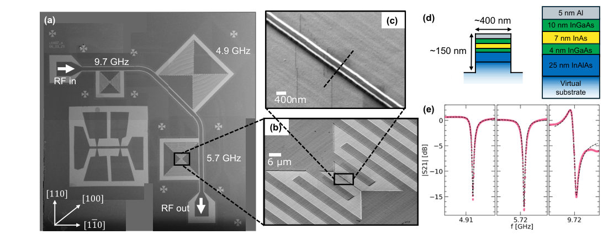
<figcaption class="paper-figure-caption"><b>Fig 1.</b> FIG. 1. Sample overview: (a-c) Three lumped-element resonators fabricated in Al/InAs with resonance frequencies at 4.9 GHz, 5.7 GHz, 9.7 GHz are capacitively coupled to the same transmission line, used to measure the complex transmission coefficient S21. The three devices are oriented along different crystal axes. A large Hall bar structure allows DC-access and on-chip heating. (b) Each resonator consists of an interdigitated capacitor shunted by a narrow wire acting as inductor. (c) The wires are typically 200-400 nm wide and 20 µm long. The resonance frequency is tuned with the number of fingers in the capacitor. The design allows a fine alignment with in-plane magnetic field and a...</figcaption>
</figure>
<figure class="paper-figure-card">
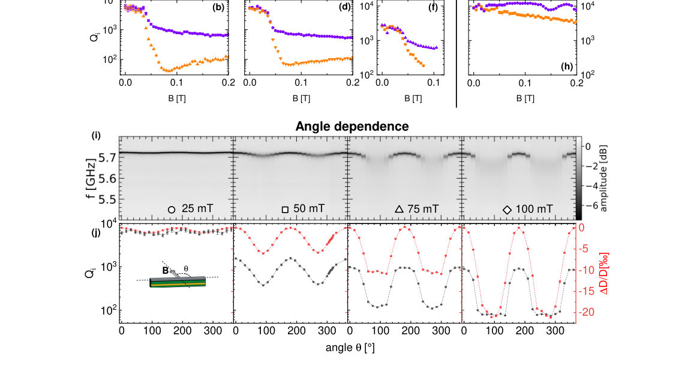
<figcaption class="paper-figure-caption"><b>Fig 2.</b> FIG. 2. Response with in-plane field: for all three devices oriented at (a-b) 0◦, (c-d) 45◦and (e-f) 90◦, as described in Fig. 1. The relative frequency shift is shown in the top panels (a,c,e) and the internal quality factor in the bottom panels (b,d,f) as a function of in-plane magnetic field applied parallel (purple line) and perpendicular (orange line) to each resonator. The relative orientation between the inductor wire and the applied field is indicated with a little sketch for each device. Following the same color-code, in (g-h) the relative frequency shift and internal quality factor as a function of magnetic field for a witness resonator made out of Al on a GaAs substrate. (i,j)...</figcaption>
</figure>
<figure class="paper-figure-card">
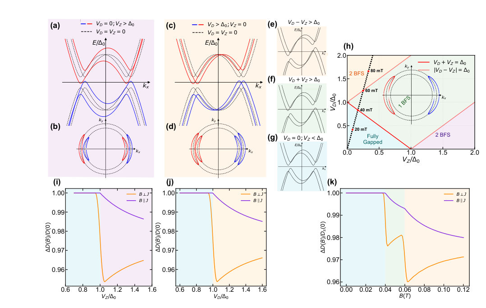
<figcaption class="paper-figure-caption"><b>Fig 3.</b> FIG. 3. Bogoliubov Fermi Surfaces: (a,c) Energy bands for the BdG Hamiltonian obtained in a simplified model of the proximitized 2DEG with SOC. Dashed lines correspond to zero field. Continuous lines show the effect of (a) Zeeman energy VZ and (c) Doppler energy VD larger than the induced gap ∆0. In (a) electron-like (red) and hole-like (blue) bands shift with applied field (here in the y-direction) crossing the Fermi level, while in (c) they are tilted. (b,d) As a consequence “banana-shaped” BFS emerge in both cases along the k-direction perpendicular to the field. (e-g) A combination of both effects (VZ, VD) results in the successive transitions: (g) gapped phase →(f) 1-BFS →(e) 2-BFS as...</figcaption>
</figure>
<figure class="paper-figure-card">

<figcaption class="paper-figure-caption"><b>Fig 4.</b> FIG. 4. Comparison with theory: for the resonators ori- ented at (a) 0◦and (b) 45◦, as described in Fig. 1. Rel- ative stiffness shift as a function of in-plane magnetic field applied parallel (purple), perpendicular (orange) and form- ing 45◦(blue) and 135◦(red) to each resonator. The relative orientation between the inductor wire and the applied field is indicated with a little sketch for each device. The experi- mental results are shown with dots while the lines correspond to the theory calculations: continuous line is the combined Zeeman/Orbital scenario, dashed line corresponds to Orbital- alone scenario and dot-dashed to Zeeman-alone scenario (see Fig. 3 and discussion on parameters...</figcaption>
</figure>
</div>

<p><strong>Summary.</strong> The paper reports on experimental and theoretical investigations into superconductivity in Al/InAs hybrid structures. By measuring the microwave electrodynamics, the authors detect an anisotropic suppression of superfluid stiffness that signals the emergence of Bogoliubov Fermi Surfaces. This work establishes microwave measurements as a sensitive tool for probing gapless superconducting phases.</p>
<p><strong>Why it may be interesting.</strong> This work provides a concrete platform for observing exotic superconducting states predicted in proximity systems, linking macroscopic transport measurements (microwave response) directly to microscopic band structure features like BFS.</p>
<details>
<summary>Detailed structure</summary>
<p><strong>Main problem.</strong> The study investigates the emergence of Bogoliubov Fermi Surfaces (BFS) and characterizes anisotropic gapless superconductivity in hybrid superconductor/semiconductor heterostructures.</p>
<p><strong>Main result.</strong> The observed non-monotonic and strongly anisotropic evolution of the superfluid stiffness, measured via microwave electrodynamics, is consistent with the formation of BFS due to the interplay of Zeeman and orbital Fulde-Ferrell effects.</p>
<p><strong>Method.</strong> The research combines microwave electrodynamic measurements (probing kinetic inductance) with microscopic theoretical calculations based on the Bogoliubov-de Gennes framework.</p>
<p><strong>Model / system.</strong> The physical system is a hybrid Al/InAs heterostructure containing a 2DEG proximitized by an Al superconductor. The theory models the superconducting response using the superfluid stiffness tensor derived from the free energy density.</p>
<p><strong>Key observables.</strong> Superfluid stiffness tensor components ($D_{ij}$), relative frequency shift ($\Delta f_0 / f_0$), and internal quality factor change ($Q_i$) as functions of in-plane magnetic field and angle.</p>
<p><strong>Important parameters / regimes.</strong> In-plane magnetic field ($B$), Zeeman energy ($V_Z$), Doppler energy ($V_D$), superconducting gap ($\Delta_0$), and temperature ($T$).</p>
<p><strong>Assumptions / limitations.</strong> The analysis assumes that the electrodynamic response can be mapped to the superfluid stiffness tensor, and theoretical models rely on specific approximations regarding disorder effects and gauge equivalence.</p>
<p><strong>Figures summary.</strong> Figures show sample setups, microwave resonance curves demonstrating field dependence, theoretical band structure evolution illustrating gap closing and BFS formation, and quantitative maps detailing angular anisotropy of stiffness suppression.</p>
<p><strong>Paper structure.</strong> The paper progresses from experimental characterization using microwave resonators to establishing the link between anisotropic response and BFS emergence. It then uses microscopic theory (BdG) to model this behavior, followed by fitting measured superfluid density data to confirm the theoretical predictions regarding field-induced gapless phases.</p>
</details>
<details>
<summary>Abstract</summary>
<p>We investigate the microwave electrodynamics of a proximitized two-dimensional electron gas in hybrid superconductor/semiconductor heterostructures. Using lumped-element resonators with inductor wires oriented relative to an in-plane magnetic field, we directly probe the superfluid stiffness via the kinetic inductance. As the field increases, the resonance frequency exhibits a non-monotonic and strongly anisotropic evolution that cannot be explained by orbital pair breaking alone. We show that this behavior is consistent with the emergence of Bogoliubov Fermi surfaces, which selectively suppress the supercurrent response depending on the direction of the magnetic field. Microscopic calculations of the stiffness tensor capture the observed anisotropy driven by the interplay of Zeeman and orbital Fulde-Ferrell effects. Our results establish microwave stiffness measurements as a sensitive probe of anisotropic gapless superconductivity in hybrid systems.</p>
</details>
<p><sub><a href="#top">↑ back to top</a></sub></p>

<p><a id="paper-2608.06602"></a></p>
<h3 id="determination-of-the-properties-of-a-superconducting-single-crystal-fese-using-an-epr-spectroscopy"><a href="http://arxiv.org/abs/2608.06602v1">Determination of the properties of a superconducting single crystal FeSe using an EPR spectroscopy</a></h3>
<p><strong>Authors:</strong> S. I. Bondarenko, A. A. Prokhorov, N. N. Galtsov, V. P. Timofeev, V. P. Koverya, A. V. Krevsun<br>
<strong>Type:</strong> experiment · <strong>Category:</strong> other · <strong>PDF:</strong> <a href="https://arxiv.org/pdf/2608.06602v1">https://arxiv.org/pdf/2608.06602v1</a><br>
<strong>Analysis basis:</strong> full PDF text, analyzed in chunks
<strong>Topic relevance:</strong> <code>spintronics-quantum-optics interface</code> <strong>2/5</strong> · <code>Kondo &amp; dissipative impurity</code> <strong>1/5</strong> · <code>quantum measurements</code> <strong>1/5</strong></p>
<div class="figure-strip-hint">↔ Scroll figures horizontally</div>
<div class="paper-figures-scroll">
<figure class="paper-figure-card">

<figcaption class="paper-figure-caption"><b>Fig 1.</b> Fig. 1. (Color online) Dependence of the magnetic moment (m) of a FeSe single crystal on the temperature.</figcaption>
</figure>
<figure class="paper-figure-card">

<figcaption class="paper-figure-caption"><b>Fig 2.</b> Fig. 2. (Color online) Field dependences of the EPR signal from a FeSe single crystal (in arbitrary units) on the magnitude of the magnetic field H at various temperatures. For ease of analysis, the experimental curves displaying the obtained characteristics are shifted along the vertical axis by equal intervals relative to the dependence at T = 3.5 K.</figcaption>
</figure>
<figure class="paper-figure-card">

<figcaption class="paper-figure-caption"><b>Fig 3.</b> Fig. 3. (Color online) Dependences of the non-resonant EPRsignal of the crystal on the magnetic field, starting from its absence, up to 30 Oe at different temperatures (indicated next to each curve additionally for ease of reading).</figcaption>
</figure>
<figure class="paper-figure-card">

<figcaption class="paper-figure-caption"><b>Fig 4.</b> Fig. 4. (Color online) Temperature dependence of the spectrometer output signal when studying a single-crystal FeSe sample in the region of low magnetic fields (0 - 29.3 Oe). The signal is maximum and positive at H = 29.3 Oe and is minimum and negative at H = 0 Oe.</figcaption>
</figure>
<figure class="paper-figure-card">

<figcaption class="paper-figure-caption"><b>Fig 5.</b> Fig. 5. Temperature dependences of the resistance (R*) of a certain superconductor with a critical temperature of about 8 K (a – curves 1, 2), their first derivatives dR*/dT (b – curves 3, 4), as well as the corresponding calculated temperature dependences of the EPR signal (c – curves 5, 6).</figcaption>
</figure>
</div>

<p><strong>Summary.</strong> This work uses Electron Paramagnetic Resonance (EPR) spectroscopy on FeSe single crystals to characterize their superconducting properties. By analyzing non-resonant EPR signals under varying magnetic fields and temperatures, the authors determined critical parameters such as $T_c$ and $H_{c1}$. The results confirm the mixed state behavior expected for a Type-II superconductor while also identifying electronic signatures related to iron ion oxidation states.</p>
<p><strong>Why it may be interesting.</strong> The use of high-frequency EPR spectroscopy to probe superconducting vortex dynamics and critical fields provides an alternative, highly sensitive diagnostic tool compared to standard DC magnetometry or resistivity measurements in condensed matter physics.</p>
<details>
<summary>Detailed structure</summary>
<p><strong>Main problem.</strong> To study the superconducting and normal state properties of a single crystal of FeSe using Electron Paramagnetic Resonance (EPR) spectroscopy.</p>
<p><strong>Main result.</strong> The EPR measurements successfully determined key superconducting parameters like $T_c$, the transition width, and the first critical magnetic field ($H_{c1}$), while also characterizing the electronic states via resonant signals corresponding to $   ext{Fe}^{2+}$ ions.</p>
<p><strong>Method.</strong> EPR spectroscopy was employed across varying temperatures and applied magnetic fields. Non-resonant signals were analyzed for superconducting signatures (e.g., $180^\circ$ phase jumps), while resonant signals identified specific paramagnetic ion states.</p>
<p><strong>Model / system.</strong> The physical system is a single crystal of FeSe, studied as a Type-II superconductor. Measurements compare the field dependence of non-resonant EPR signals in the mixed state to theoretical models derived from the temperature derivative of resistivity ($dR^*/dT$).</p>
<p><strong>Key observables.</strong> Non-resonant EPR signal (field/temperature dependent), resonant EPR signals at 1400 Oe and 3400 Oe, $T_c$, superconducting transition width, and $H_{c1}$.</p>
<p><strong>Important parameters / regimes.</strong> Magnetic field up to 6000 Oe; Temperature range from 3.5 K to 25 K; Critical fields ($H_{c1}$) and onset temperature ($T_{c	ext{onset}} \approx 8.8 	ext{ K}$).</p>
<p><strong>Assumptions / limitations.</strong> The non-resonant EPR signal is proportional to the field derivative of the radiation power, and comparisons between electrical (FPM) and microwave (EPR) measurements are made despite methodological differences.</p>
<p><strong>Figures summary.</strong> Figures illustrate $T_{c	ext{onset}}$ from magnetization ($T_c=8.8 	ext{ K}$), the nonlinear field dependence of the EPR signal in the mixed state, the characteristic $180^\circ$ phase jump identifying $H_{c1}$, and comparisons between temperature-dependent EPR signals and resistivity derivatives.</p>
<p><strong>Paper structure.</strong> The paper systematically presents measurements across different states (normal vs. superconducting) using EPR. It first establishes $T_c$ via magnetization, then uses low-field non-resonant signals to map the mixed state behavior ($H_{c1}$ identification), and finally compares the temperature dependence of these signals against established electrical transport models.</p>
</details>
<details>
<summary>Abstract</summary>
<p>Using an EPR spectrometer, the properties of single-crystal FeSe were studied in a magnetic field up to 6000 Oe at temperatures from 3.5 K to 8 K in the superconducting state and at temperatures above 8K and up to 25K in the normal state. It was shown that by measuring non-resonant spectrometer signals in zero and weak magnetic fields up to 30 Oe, it is possible to determine critical temperature Tc, the superconducting transition width, and the value of the first critical magnetic field Hc1 in FeSe single-crystal. Resonant EPR signals are observed in fields at 1400 Oe and 3400 Oe, which corresponds to the paramagnetism of doubly ionized iron atoms (Fe2+) in the FeSe crystal. Non-resonant EPR signals in a magnetic field up to 6000 Oe at temperatures from 3.5K to 8K are a nonlinear function of the field, and correspond to the superconducting mixed state of the FeSe, but at temperatures above 8K (up to 25K) they are field independent.</p>
</details>
<p><sub><a href="#top">↑ back to top</a></sub></p>

<p><a id="paper-2608.07374"></a></p>
<h3 id="type-ii-mirror-chern-insulator-in-altermagnets"><a href="http://arxiv.org/abs/2608.07374v1">Type-II Mirror Chern Insulator in Altermagnets</a></h3>
<p><strong>Authors:</strong> Amrita Mukherjee, Pritesh Srivastava, Rahul Verma, Bahadur Singh<br>
<strong>Type:</strong> theory · <strong>Category:</strong> other · <strong>PDF:</strong> <a href="https://arxiv.org/pdf/2608.07374v1">https://arxiv.org/pdf/2608.07374v1</a><br>
<strong>Analysis basis:</strong> full PDF text, analyzed in chunks
<strong>Topic relevance:</strong> <code>exotic spin models in light-matter</code> <strong>1/5</strong> · <code>spintronics-quantum-optics interface</code> <strong>1/5</strong></p>
<div class="figure-strip-hint">↔ Scroll figures horizontally</div>
<div class="paper-figures-scroll">
<figure class="paper-figure-card">

<figcaption class="paper-figure-caption"><b>Fig 1.</b> FIG. 1. (a) Square-octagon lattice with altermagnetic order. Red (blue) sites denote positive (negative) exchange fields. The blue and red bonds denote the intercell hopping (t2) between the blue and red sites, respectively, while the color gradient within each square plaquette represents the intracell hopping (t1). The black square outlines the unit cell, and the dashed lines indicate the mirror planes M110 and M1¯10. (b) Spin-resolved Fermi contours for t2 = 0.8 and δm = 0.2. The high-symmetry points Γ and M are marked by gray circles, while the symmetry-related X and Y valleys are highlighted by blue and red circles, respectively. (c) Corresponding spin- resolved band structure along the...</figcaption>
</figure>
<figure class="paper-figure-card">

<figcaption class="paper-figure-caption"><b>Fig 2.</b> FIG. 2. (a) Spin-resolved band structure with SOC for t2 = 0.8, λSOC = 0.24, and δm = 0.4. (b) Evolution of the Wannier charge centers in the M001 = ±i mirror sectors. (c) Berry-curvature distribution in the first Brillouin zone pro- jected onto the Mz = ±i mirror sectors. (d),(e) Edge spectra of ribbons along the (010) and (100) directions, respectively. Red and blue denote edge modes with mirror eigenvalues +i and −i, while solid and dashed curves indicate states localized on opposite edges. (f) Edge spectrum for δm = 0, correspond- ing to the conventional mirror Chern insulator with a pair of T-related Dirac cones.</figcaption>
</figure>
<figure class="paper-figure-card">

<figcaption class="paper-figure-caption"><b>Fig 3.</b> FIG. 3. (a) Bulk band structure with SOC as a function of the altermagnetic exchange field δm. (b) Topological phase diagram in the t2–δm parameter space for λSOC = 0.24. The color scale denotes the mirror Chern number CM. (c) Schematic illustration of the type-II mirror Chern insulator. Counterpropagating edge modes with opposite mirror eigen- values are separated into symmetry-related valleys of the Bril- louin zone.</figcaption>
</figure>
<figure class="paper-figure-card">

<figcaption class="paper-figure-caption"><b>Fig 4.</b> FIG. 4. (a) Crystal structure of the PbSe/V2Se2O heterobi- layer. The two magnetic sublattices of V2Se2O are related by the spin-lattice symmetry [C2 ∥C4z]. The right panels show the real-space spin density centered on a Se atom in PbSe (top) and a V atom in V2Se2O (bottom). (b) Spin-resolved band structure of the PbSe/V2Se2O heterobilayer for an in- terlayer separation of d = 3.5 ˚A with SOC. Red and blue denote spin-up and spin-down Sz polarization, respectively. (c) Enlarged view of the PbSe-derived bands near the X and Y valleys. (d) Orbital-resolved band structure of the PbSe- derived states near the X valley. Orange and green denote the Pb-pz and Se-px orbital contributions,...</figcaption>
</figure>
</div>

<p><strong>Summary.</strong> This work predicts the existence of a Type-II Mirror Chern Insulator phase stabilized by altermagnetic ordering in 2D materials. By modeling this using a lattice Hamiltonian, the authors show that SOC gaps out Dirac nodes into a topologically non-trivial state (CM=2). The key novelty is the prediction of momentum-separated edge modes, which they suggest can be realized in the $   ext{PbSe}/  ext{V}_2    ext{Se}_2   ext{O}$ heterobilayer.</p>
<p><strong>Why it may be interesting.</strong> The concept of using magnetic order (altermagnetism) to engineer specific topological invariants like the Mirror Chern number provides a powerful, symmetry-based route to realizing exotic quantum states in condensed matter systems.</p>
<details>
<summary>Detailed structure</summary>
<p><strong>Main problem.</strong> The paper aims to predict and characterize a novel topological phase called a "Type-II Mirror Chern Insulator" stabilized by altermagnetism in the presence of mirror symmetry.</p>
<p><strong>Main result.</strong> Altermagnetic order generates symmetry-related valley-polarized Dirac nodes, which are gapped by SOC to yield a bulk insulator with a non-trivial mirror Chern number (CM=2) and distinct, momentum-separated edge modes.</p>
<p><strong>Method.</strong> The study uses electronic structure calculations on a 2D square-octagon lattice model, analyzing the Bloch Hamiltonian and calculating topological invariants like the Mirror Chern number.</p>
<p><strong>Model / system.</strong> The system is modeled using a tight-binding Hamiltonian incorporating hopping ($H_t$), intrinsic SOC ($H_{SOC}$), and an altermagnetic exchange field ($H_m$). A candidate material proposed for realization is the PbSe/V2Se2O heterobilayer.</p>
<p><strong>Key observables.</strong> Mirror Chern number (CM=2), momentum-separated edge modes, valley-polarized Dirac nodes, and bulk insulating gap opening.</p>
<p><strong>Important parameters / regimes.</strong> Altermagnetic order parameter ($\delta_m$) and SOC strength ($\lambda_{SOC}$); the lattice structure (square-octagon).</p>
<p><strong>Assumptions / limitations.</strong> The analysis relies on the specific square-octagon lattice model and assumes the feasibility of realizing the altermagnetic proximity effect in the proposed heterobilayer.</p>
<p><strong>Figures summary.</strong> Figures illustrate spin-resolved Fermi contours, band structure evolution showing node gapping, Berry curvature hotspots confirming CM=2, and edge spectra demonstrating momentum separation compared to conventional insulators.</p>
<p><strong>Paper structure.</strong> The paper establishes the theoretical model using altermagnetism in a 2D lattice, calculates the topological invariant (CM), demonstrates the unique Type-II signature via separated edge modes, and concludes by proposing a concrete material platform ($    ext{PbSe}/  ext{V}_2    ext{Se}_2   ext{O}$) for experimental realization.</p>
</details>
<details>
<summary>Abstract</summary>
<p>Altermagnets with momentum-dependent spin splitting despite zero net magnetization can support unique topological states under broken time-reversal symmetry. We predict a mirror-symmetry-protected topological crystalline insulator with momentum-separated edge modes in a two-dimensional altermagnet. Using a square-octagon lattice model, we show that altermagnetic order generates symmetry-related valley-polarized Dirac nodes, which are gapped by spin-orbit coupling to yield a mirror Chern insulator with $C_{\mathcal{M}}=2$. In contrast to conventional mirror Chern insulators, where the two mirror-protected edge modes cross at the same momentum to form a Dirac cone, altermagnetic spin splitting and valley-selective band inversion separate these edge modes in momentum. We refer to this phase as a type-II mirror Chern insulator. We further propose a PbSe/$\mathrm{V_2Se_2O}$ heterobilayer as a candidate material for realizing this phase through the altermagnetic proximity effect. Our results establish altermagnetism as a route to mirror-protected topological phases with momentum-separated edge modes.</p>
</details>
<p><sub><a href="#top">↑ back to top</a></sub></p>

<p><a id="paper-2608.06492"></a></p>
<h3 id="effectiveness-of-some-0-db-cryogenic-microwave-attenuators-as-thermal-heatsinks"><a href="http://arxiv.org/abs/2608.06492v1">Effectiveness of Some 0 dB Cryogenic Microwave Attenuators as Thermal Heatsinks</a></h3>
<p><strong>Authors:</strong> J. T. Klomp, Haoyun Huang, G. A. Csathy<br>
<strong>Type:</strong> experiment · <strong>Category:</strong> other · <strong>PDF:</strong> <a href="https://arxiv.org/pdf/2608.06492v1">https://arxiv.org/pdf/2608.06492v1</a><br>
<strong>Analysis basis:</strong> full PDF text, analyzed in chunks
<strong>Topic relevance:</strong> <code>non-equilibrium dynamics</code> <strong>1/5</strong></p>
<div class="figure-strip-hint">↔ Scroll figures horizontally</div>
<div class="paper-figures-scroll">
<figure class="paper-figure-card">

<figcaption class="paper-figure-caption"><b>Fig 1.</b> Fig. 1 In order to expose the inner pin of a female SMA connector, its threads were filed down and the teflon spacer was removed. The diagram illustrates this for the 0 dB attenuator ATT-1. The chip heater and thermometer attached to the inner pin are also shown.</figcaption>
</figure>
<figure class="paper-figure-card">

<figcaption class="paper-figure-caption"><b>Fig 2.</b> Fig. 2 Readings of the thermometer attached to ATT-3 as the heating power P is increased. Numbers indicate the value of the applied power P. The body of the attenuator is held at Tmx = 400 mK.</figcaption>
</figure>
<figure class="paper-figure-card">

<figcaption class="paper-figure-caption"><b>Fig 3.</b> Fig. 3 (a) Thermal response curves of the three attenuators. (b) The thermal transresistance R plotted against mixing chamber temperature Tmx for the three attenuators.</figcaption>
</figure>
<figure class="paper-figure-card">

<figcaption class="paper-figure-caption"><b>Fig 4.</b> Fig. 4 Temporal responses of ATT-2 (green trace) and ATT-3 (blue trace) from changing the mixing chamber from Tmx = 75 mK to Tmx = 400 mK. The slight oscillation at the peak of the blue curve is due to overshoot in the PID feedback loop. Inset shows the temperature dependence of the thermal time constant τ for ATT-2. The dashed line is a guide to the eye.</figcaption>
</figure>
</div>

<p><strong>Summary.</strong> This experimental paper characterizes how effectively different commercial cryogenic microwave attenuators function as thermal heatsinks. By measuring their temperature response under controlled heat loads, the authors provide quantitative data on their thermal transresistance and time constants. This information is vital for designing reliable and accurately controlled thermal environments in advanced low-temperature quantum experiments.</p>
<p><strong>Why it may be interesting.</strong> While not directly about quantum dynamics, understanding the precise thermal environment is crucial for any experiment involving sensitive quantum devices (like qubits or superconducting circuits) where temperature fluctuations can cause decoherence or measurement errors.</p>
<details>
<summary>Detailed structure</summary>
<p><strong>Main problem.</strong> The study aims to quantify the thermal performance of cryogenic microwave attenuators when used as thermal anchors for coaxial cables in ultra-low temperature quantum experiments.</p>
<p><strong>Main result.</strong> The quartz crystal attenuator was found to be significantly more effective than teflon or sealed alternatives, providing better thermal anchoring and lower thermal transresistance at various temperatures.</p>
<p><strong>Method.</strong> The authors measured the temperature response of three different commercial 0 dB attenuators by applying controlled heat loads and measuring the resulting temperature change versus applied power.</p>
<p><strong>Model / system.</strong> The physical system involves coaxial cables used in dilution refrigerators, focusing on the thermal coupling through the inner conductor. The measurement characterizes the attenuator's ability to act as a reliable thermal heatsink.</p>
<p><strong>Key observables.</strong> Thermal transresistance (R), temperature dependence of R, and thermal equilibration time constant ($\tau$).</p>
<p><strong>Important parameters / regimes.</strong> Operating temperatures in the millikelvin range ($T_{mx}$), applied heating power ($P$), and material types (quartz crystal vs. teflon).</p>
<p><strong>Assumptions / limitations.</strong> The body of the attenuator is assumed to be in strong thermal contact with the mixing chamber, and comparisons are made between different thermal models (e.g., simple resistance vs. distributed resistance).</p>
<p><strong>Figures summary.</strong> Figures illustrate the experimental setup, show temperature readings versus applied power for a specific attenuator, plot thermal response curves and transresistance across various base temperatures, and compare temporal decay rates ($\tau$) for different materials.</p>
<p><strong>Paper structure.</strong> The paper introduces the need for accurate thermal characterization in cryogenic setups, details the measurement methodology using three distinct attenuators, presents quantitative results comparing their performance metrics (R and $\tau$), and concludes with guidelines for designing better thermal environments.</p>
</details>
<details>
<summary>Abstract</summary>
<p>Coaxial cables are widely used in radiofrequency and microwave cryogenic setups for condensed matter and quantum experiments. Since the inner conductor of coaxes is often in good thermal contact with the sample to be measured, it is desirable to know the phononic heat channeled by the inner conductor. Although cryogenic attenuators are widely used to thermalize the inner conductor of coaxes, to our knowledge, quantitative information is not available. We present data on the effectiveness of three commercially available 0 dB attenuators as thermal heatsinks. In particular, we measured the temperature of the inner pin of several 0 dB attenuators under a heat load. This information will aid in designing and carefully controlling the thermal environment of samples in high-frequency experiments mounted in dilution refrigerators and on nuclear demagnetization stages.</p>
</details>
<p><sub><a href="#top">↑ back to top</a></sub></p>
<h3 id="other-secondary-papers-2">Other secondary papers (2)</h3>
<details>
<summary>Show other secondary papers</summary>

<p><a id="paper-2608.06662"></a></p>
<h3 id="cross-geometry-transferability-assessment-of-universal-machine-learning-interatomic-potentials-from-bulk-materials-to-atomic-nanowires"><a href="http://arxiv.org/abs/2608.06662v1">Cross-Geometry Transferability Assessment of Universal Machine Learning Interatomic Potentials: From Bulk Materials to Atomic Nanowires</a></h3>
<p><strong>Authors:</strong> Pedro H. M. Zanineli, Bruno Focassio, Gabriel R. Schleder<br>
<strong>Type:</strong> theory · <strong>Category:</strong> disordered systems and neural networks · <strong>PDF:</strong> <a href="https://arxiv.org/pdf/2608.06662v1">https://arxiv.org/pdf/2608.06662v1</a><br>
<strong>Analysis basis:</strong> full PDF text, analyzed in chunks</p>
<div class="figure-strip-hint">↔ Scroll figures horizontally</div>
<div class="paper-figures-scroll">
<figure class="paper-figure-card">

<figcaption class="paper-figure-caption"><b>Fig 1.</b> FIG. 1. Overview of the ZrO2 cross-geometry dataset and evaluation workflow. (A) Workflow comprising dataset construction, model evaluation and adaptation, and validation using derived physical properties. (B) High-resolution transmission electron microscopy image of a ZrO2 desintering event at the interface between two [26, 27]. (C–G) Representative bulk, slab, particle, neck, and wire configurations, respectively, arranged from comparatively high- to low-coordination environments. (H) Number of configurations in each geometry class. (I) Total atomic environments, defined as the sum of the number of atoms over all configurations in each class. (J) Per-atom energy distributions. (K)...</figcaption>
</figure>
<figure class="paper-figure-card">

<figcaption class="paper-figure-caption"><b>Fig 2.</b> FIG. 2. Zero-shot evaluation on the ZrO2 dataset. (A) Aligned per-atom energy RMSE and force RMSE for the evaluated MLIPs, grouped according to the Matbench Discovery MP-NC and MP-C categories. In panel A, black bars indicate aligned per-atom energy RMSE, orange bars indicate force RMSE, and dashed horizontal lines indicate the corresponding mean errors across all evaluated models. (B) Parity plots of training-aligned MACE-MP-0 energies against DFT reference energies for the slab, particle, and wire geometries. (C) Energy and force RMSE distributions for ORB-V3 and MACE-MP-0. Colored markers indicate the errors for the bulk without defects, slab, particle, neck, and wire subsets.</figcaption>
</figure>
<figure class="paper-figure-card">

<figcaption class="paper-figure-caption"><b>Fig 3.</b> Figure 3 compares zero-shot inference (ZS), fine-tuning (FT), and from-scratch training (FS). For FT and FS, both architectures were trained for the same 50 epochs and evaluated on the same retained test partition. Zero- shot inference provides an immediate baseline but retains the large errors observed for underrepresented geome- tries. Under the fixed training setup, fine-tuned models</figcaption>
</figure>
<figure class="paper-figure-card">

<figcaption class="paper-figure-caption"><b>Fig 4.</b> FIG. 3. Accuracy–cost comparison of zero-shot, fine-tuned, and from-scratch models. Results are shown for MACE (cir- cles) and ORB (squares), with MP-compliant models in green and MP-non-compliant models in purple. Panels (A) and (B) report the training-aligned energy RMSE and force RMSE, respectively, as functions of wall time. Zero-shot timings cor- respond only to inference and are included as descriptive base- lines rather than cost-equivalent comparisons with the trained models. Lower values along both axes indicate better perfor- mance.</figcaption>
</figure>
<figure class="paper-figure-card">

<figcaption class="paper-figure-caption"><b>Fig 5.</b> FIG. 4. Geometry-specific and mixed-geometry fine-tuning of MACE and ORB on the ZrO2 dataset, assessing in- and out-of- domain geometries. Energy errors are shown with solid lines and circles, and force errors with dashed lines and squares. Colors indicate the evaluation geometry: bulk, slab, particle, neck, and wire. (A) Cross-geometry fine-tuning transferability for MACE (top row) and ORB (bottom row). Each column denotes the geometry used for fine-tuning, and the curves report aligned energy and force RMSE as functions of the total number of atomic environments. (B) Geometry-specific fine-tuning learning curves for MACE and ORB, showing aligned energy and force RMSE as functions of the...</figcaption>
</figure>
</div>
<p><strong>Summary.</strong> This paper rigorously assesses how well machine learning interatomic potentials (MLIPs) maintain accuracy when simulating materials across vastly different structural environments, such as bulk solids versus atomic nanowires. By testing $ ext{ZrO}_2$ under simulated desintering conditions, the authors demonstrate that simple error metrics are insufficient predictors of physical reliability. They conclude that creating geometry-diverse training data and employing mixed-geometry fine-tuning are crucial for robust MLIP application in low-coordination nanostructures.</p>
<p><strong>Why it may be interesting.</strong> This work is highly relevant because it pushes the boundaries of using data-driven potentials to model complex condensed matter systems where local coordination changes drastically, which is a key challenge in nanoscale physics.</p>
<details>
<summary>Detailed structure</summary>
<p><strong>Main problem.</strong> The primary challenge is assessing how reliably Machine Learning Interatomic Potentials (MLIPs) transfer their accuracy when simulating structural changes, specifically moving from bulk materials to low-coordination nanostructures like atomic nanowires.</p>
<p><strong>Main result.</strong> Cross-geometry fine-tuning strategies are superior to geometry-specific tuning for reducing overall cross-geometry errors, and the study proves that simple energy/force error metrics do not predict complex property behavior.</p>
<p><strong>Method.</strong> The authors benchmarked 26 pretrained MLIPs using a DFT-generated dataset spanning five geometries (bulk to wire) and compared zero-shot inference against fine-tuning protocols.</p>
<p><strong>Model / system.</strong> The study focuses on Zirconia ($    ext{ZrO}_2$) undergoing desintering, creating complex structures including necks and atomic wires. The models are advanced MLIPs (e.g., ORB) trained to approximate the potential energy surface derived from DFT calculations.</p>
<p><strong>Key observables.</strong> Energy and force root-mean-square errors (RMSEs), elastic properties (Young's modulus, Bulk Modulus), surface energies ($\gamma$), phonon dispersions, and structural metrics like RMSD during MD simulations.</p>
<p><strong>Important parameters / regimes.</strong> The simulation regime involves tensile deformation, varying coordination numbers (bulk to wire), and comparison between zero-shot, fine-tuning, and training from scratch MLIP adaptation strategies.</p>
<p><strong>Assumptions / limitations.</strong> The analysis assumes that the DFT dataset accurately captures the necessary physics for transferability; however, it notes limitations regarding isolating long-range electrostatic effects.</p>
<p><strong>Figures summary.</strong> Figures compare energy/force errors across geometries (Fig 2A), show phonon dispersion curves (S2, S3) and vibrational DOS (S4), and track structural stability via RMSD and minimum bond distances during tensile loading (S5, S10).</p>
<p><strong>Paper structure.</strong> The paper establishes the problem of MLIP transferability across geometries using $    ext{ZrO}_2$. It details dataset construction and benchmarking protocols, comparing zero-shot vs. fine-tuning strategies. Finally, it validates these models by calculating macroscopic properties (elasticity, surface energy) and simulating dynamic processes (MD/Phonons).</p>
</details>
<details>
<summary>Abstract</summary>
<p>Foundation machine-learning interatomic potentials (MLIPs) enable atomistic simulations at substantially lower computational cost than first-principles methods, but their reliability across structural geometries remains insufficiently understood. Here, we construct a density-functional-theory dataset of ZrO2 configurations spanning bulk, slab, particle, neck, and atomically thin wire environments motivated by an experimentally observed ZrO2 desintering process involving neck thinning and atomic wire formation. We first benchmark 26 pretrained MLIPs and observe pronounced geometry-dependent degradation in zero-shot predictions. Without any training, after only reference-energy alignment, the best zero-shot model (ORB-V3) reaches energy and force root-mean-square errors of 6 meV/atom and 197.3 meV/Å, respectively, with the largest force errors in neck and wire configurations. We then compare zero-shot inference, fine-tuning, and training from scratch strategies. Fine-tuning yields lower energy and force errors than training from scratch, while both require comparable wall-clock time. Geometry-specific fine-tuning improves in-domain accuracy but frequently produces negative transfer to other structural classes, whereas mixed-geometry fine-tuning reduces cross-geometry errors. Evaluations of elastic and vibrational properties, surface energies, and neck dynamics further show that rankings based on average energy and force errors do not universally predict property-level behavior. These results demonstrate that geometry-diverse target data and independent physical validations are necessary when adapting foundation MLIPs to low-coordination (ionic) nanostructures.</p>
</details>
<p><sub><a href="#top">↑ back to top</a></sub></p>

<p><a id="paper-2608.06643"></a></p>
<h3 id="extracting-the-full-conductivity-tensor-in-a-rectangular-sample"><a href="http://arxiv.org/abs/2608.06643v1">Extracting the full conductivity tensor in a rectangular sample</a></h3>
<p><strong>Authors:</strong> Julia Gelfond, Oskar Vafek<br>
<strong>Type:</strong> theory · <strong>Category:</strong> other · <strong>PDF:</strong> <a href="https://arxiv.org/pdf/2608.06643v1">https://arxiv.org/pdf/2608.06643v1</a><br>
<strong>Analysis basis:</strong> full PDF text, analyzed in chunks</p>
<div class="figure-strip-hint">↔ Scroll figures horizontally</div>
<div class="paper-figures-scroll">
<figure class="paper-figure-card">

<figcaption class="paper-figure-caption"><b>Fig 1.</b> FIG. 1. Analytical solution for electric potential on a rectangle and experimental configurations for extracting the full conductivity tensor and principal axes angle. (a) Original sample with principal axes rotated relative to the lab frame by α. (b) Rotation clockwise by α. (c) Anisotropic rescaling. (d) Rotation counterclockwise by θ and uniform rescaling. (e) Schwarz-Christoffel conformal map and analytical solution for the potential in the complex z-plane. (f) Three vertex configurations which together give the Hall conductivity and geometric mean of the longitudinal conductivities. The fourth vertex configuration does not give new information, but can be used as a cross-check. (g)...</figcaption>
</figure>
<figure class="paper-figure-card">

<figcaption class="paper-figure-caption"><b>Fig 2.</b> FIG. 2. (a) Schematic showing how 1 −r2 = r2R1/R2 always has a unique solution for r2. Note that r2 &gt; 0.5 if R1 &gt; R2 and r2 &lt; 1/2 if R1 &lt; R2. (b) Plot of r as a function of R1/R2 on a base-10 log scale.</figcaption>
</figure>
<figure class="paper-figure-card">

<figcaption class="paper-figure-caption"><b>Fig 3.</b> FIG. 3. Comparison of our analytical solution with simulations from COMSOL. (a) Contour plot generated by COMSOL overlaid by dashed black contours generated by our solution. Here, σ+ ≈4.4 S/□, σ−≈2.6 S/□, σH = 0.25 S/□, and α ≈28◦. High potential is red (bottom left corner) and low potential is blue (bottom right corner). (b) Counterclockwise edge cuts of potential from the contour plot (a). (c) σ+ ≈5.2 S/□, σ−≈1.8 S/□, σH = −0.25 S/□, and α ≈13◦. High potential is red (bottom left corner) and low potential is blue (top right corner). (d) Potential on the edges of the contour plot (c) going counterclockwise.</figcaption>
</figure>
<figure class="paper-figure-card">

<figcaption class="paper-figure-caption"><b>Fig 4.</b> FIG. 4. Contour plot of Rxx calculated with our solution (shading and yellow contours) overlaid with Rxx calculated using the sum in Ref.(50) (black dashed contours) [14]. Inset shows the setup with source (S), drain (D), and voltage (V). Here d1/d2 = 2.3/1.2.</figcaption>
</figure>
<figure class="paper-figure-card">

<figcaption class="paper-figure-caption"><b>Fig 5.</b> FIG. 5. Contour plot of the potential for a square sample with a continuous source along the top and a drain along the bottom with uniform current density, |j| ≈1.08 A/m. For this sample, σ+ ≈4.4 S/□, σ−≈2.6 S/□, σH = 0.25 S/□ and α ≈28◦. Shading and yellow contours are from COMSOL simulations, while the black dashed lines are generated from superposition of our analytical solution (55).</figcaption>
</figure>
</div>
<p><strong>Summary.</strong> This paper presents an advanced theoretical method to determine the full conductivity tensor and principal axes angle of anisotropic 2D materials using only four electrical resistance measurements on a rectangular sample. The methodology involves solving Laplace's equation via conformal mapping, yielding explicit algebraic formulas that relate measured resistances directly to the material's underlying transport properties.</p>
<p><strong>Why it may be interesting.</strong> While not directly quantum mechanical, the rigorous application of advanced mathematical physics (conformal mapping) to solve a classical electrostatics problem in an anisotropic medium showcases powerful analytical techniques applicable across condensed matter theory.</p>
<details>
<summary>Detailed structure</summary>
<p><strong>Main problem.</strong> The primary goal is to develop a simple, analytically derived experimental procedure to extract the full conductivity tensor ($\sigma$) and the principal axes angle ($\alpha$) from anisotropic 2D materials.</p>
<p><strong>Main result.</strong> The authors provide explicit analytical formulas relating four specific resistance measurements ($R1$ through $R4$) on a rectangular sample to the components of the conductivity tensor ($\sigma_+$, $\sigma_-$, $\sigma_H$).</p>
<p><strong>Method.</strong> The method relies heavily on solving Laplace's equation for the electric potential using conformal mapping techniques, specifically involving Schwarz-Christoffel transformations.</p>
<p><strong>Model / system.</strong> The system is a uniform 2D rectangular sample exhibiting anisotropic electrical conductivity ($oldsymbol{\sigma}$). The analysis models current injection via point sources and drains placed on the perimeter of this geometry.</p>
<p><strong>Key observables.</strong> Full conductivity tensor components ($\sigma_+$, $\sigma_-$, $\sigma_H$), principal axes angle ($\alpha$), and four measured resistances ($R1, R2, R3, R4$).</p>
<p><strong>Important parameters / regimes.</strong> The ratio $r$ (hypergeometric parameter) and the geometric mean of resistivity along principal axes ($
ho^*$) are key intermediate parameters.</p>
<p><strong>Assumptions / limitations.</strong> It is assumed that Ohm's law holds, the conductivity tensor is constant throughout the sample, and that the source/drain contacts can be modeled as being infinitesimally close to the perimeter.</p>
<p><strong>Figures summary.</strong> Figures illustrate the sequence of coordinate transformations (rotation, rescaling, mapping) used in the conformal mapping approach, potential contour plots comparing analytical solutions with simulations, and diagrams detailing specific vertex configurations for measurements.</p>
<p><strong>Paper structure.</strong> The paper builds from establishing the governing equations using source/drain current continuity, through deriving the complex potential solution via conformal mapping, to finally presenting algebraic relationships derived from multiple measurement configurations that allow solving for $\sigma_H$ and $\alpha$.</p>
</details>
<details>
<summary>Abstract</summary>
<p>Electrical transport measurements reveal that many 2D materials exhibit anisotropic conductivity. However, current methodologies for rectangular geometries can only extract a partial conductivity tensor or are difficult to execute experimentally. Here, we propose a simple experimental procedure to extract the full conductivity tensor (or the resistivity tensor by inversion) including the principal axes angle. Our procedure is developed by using a conformal mapping approach to obtain an analytical expression for the potential with a point source and drain on the perimeter. Our solution agrees very well with numerical simulations using COMSOL and the known limiting case where the principal axes angle vanishes. Finite source/drains can be modeled using superposition.</p>
</details>
<p><sub><a href="#top">↑ back to top</a></sub></p>
</details>

<hr>
<p>
<a href="index.html">← Index</a>
 · <a href="papers_04.html">← Previous</a>
</p>
<hr>

</body>
</html>
